![The Chincoteague Wildlife Refuge occupies the lower third of Assateague Island, lying south of the Virginia line except for two small areas in Maryland. Shore birds travel the wide beach and rafts of scoters lie beyond the surf lines in winter. The Ragged Point marshes near the northern end attract many geese and ducks; other marshes south of the lighthouse—known as the Levels—are good waterfowl land also. Sea ducks, like old squaw and goldeneye, the loons, and the cormorants, congregate in Assateague Anchorage and the Inlet. A variety of birds, also deer, foxes, and raccoons find good living conditions in the scattered patches of woodland. Fishermen cultivate their oysters and clams on the leased tide flats of the refuge and in the anchorage. Surf casters enjoy their sport from the seven-mile beach of the refuge. — An illustrated map of the northern part of Assateague Island, labeled Ragged Point Marshes, with a dashed boundary line at upper right. Drawings show marsh, trees, a surf fisherman, a pony, a shore bird, ducklings and a large snow goose in flight.](images/carson/figal.jpg)
1947-1950
This is a restored edition of Conservation in Action: the author's own words, unchanged. Every plate carries a caption and alt text written for this edition, beginning with the label the book printed. The original is available from Alaska Resources Library and Information Services (scans of the booklets). Also available as an epub. More restored editions.
Rachel Carson is remembered for Silent Spring, her 1962 account of what synthetic pesticides were doing to birds, rivers and people. Before she was a famous author she was a government writer. Trained as a marine biologist, she joined the U.S. Bureau of Fisheries in 1935 to write radio scripts and stayed until 1952. The bureau became part of the new Fish and Wildlife Service in 1940, and by 1949 she was editor-in-chief of everything it published. She left after The Sea Around Us, published in 1951, made her name.
Conservation in Action was a series of illustrated booklets the Service published between 1947 and 1950, each describing one or more of the national wildlife refuges: what the place is, which birds and animals depend on it, and what the Service was doing there. Carson planned the series. She wrote four of the booklets herself and wrote the fifth gathered here, on Bear River, with Vanez T. Wilson, a refuge biologist. She visited the refuges, often with the Service's artists Shirley A. Briggs and Katherine L. Howe, whose drawings and photographs fill most of these pages; Bob Hines illustrated Bear River.
The booklets are in series order. Chincoteague describes a barrier island on the Virginia coast where greater snow geese spend the winter. Parker River covers the marshes and dunes of Plum Island in Massachusetts. Mattamuskeet is a shallow lake in eastern North Carolina, a winter home for Canada geese and whistling swans. Guarding Our Wildlife Resources explains the whole refuge system and why migratory birds need a chain of protected places along their flyways. Bear River is a marsh at the mouth of the river where it enters the Great Salt Lake in Utah, where the refuge was created to fight the outbreaks of botulism that had killed waterfowl by the hundreds of thousands.
These were working documents, written to explain public land to the public. They deal with hunting, food plantings and water levels as plainly as with nesting and migration. They also show Carson's prose at work between her first book and her second: exact about the natural history, alert to the sound of a place, and patient with the reader.
This is a restored edition of the five booklets as printed, with their own drawings, photographs and maps, 137 in all. Pictures keep the captions printed with them, and each has a description written for this edition. Each booklet's text was read from page images and checked page by page against the scans' own text, and a second copy of every booklet was compared. The title pages give each booklet's credits; the department lines, prices and library stamps are omitted. As works of the United States government, the booklets are in the public domain.
Chincoteague: A National Wildlife Refuge
Parker River: A National Wildlife Refuge
Mattamuskeet: A National Wildlife Refuge
Guarding Our Wildlife Resources
Bear River: A National Wildlife Refuge
By Rachel L. Carson · Illustrations by Shirley A. Briggs and Katherine L. Howe · Conservation in Action, Number One · 1947
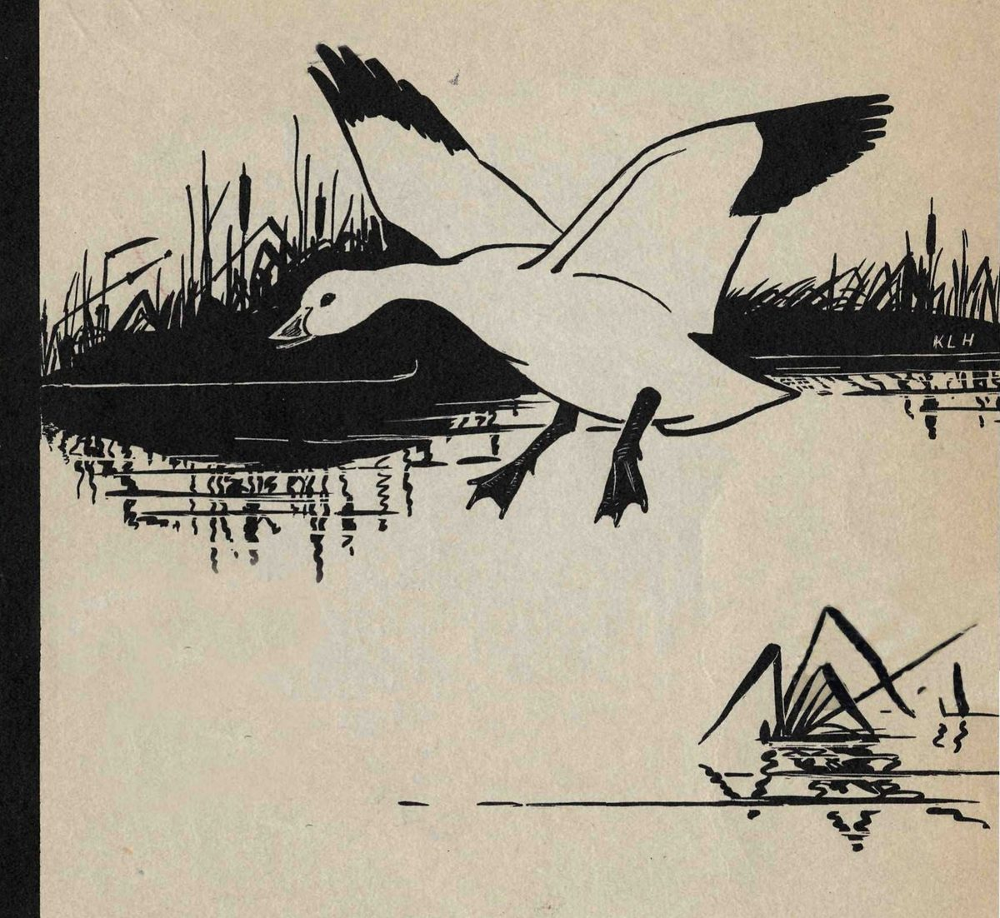
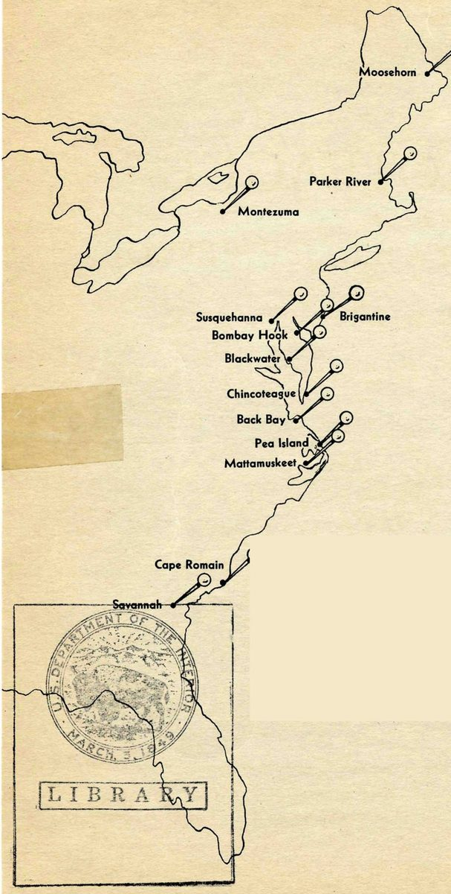
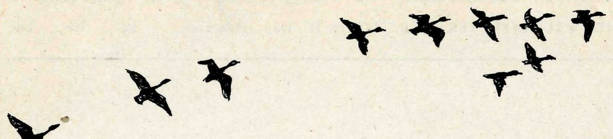
If you travel much in the wilder sections of our country, sooner or later you are likely to meet the sign of the flying goose—the emblem of the National Wildlife Refuges.
You may meet it by the side of a road crossing miles of flat prairie in the Middle West, or in the hot deserts of the Southwest. You may meet it by some mountain lake, or as you push your boat through the winding salty creeks of a coastal marsh.
Wherever you meet this sign, respect it. It means that the land behind the sign has been dedicated by the American people to preserving, for themselves and their children, as much of our native wildlife as can be retained along with our modern civilization.
Wild creatures, like men, must have a place to live. As civilization creates cities, builds highways, and drains marshes, it takes away, little by little, the land that is suitable for wildlife. And as their space for living dwindles, the wildlife populations themselves decline. Refuges resist this trend by saving some areas from encroachment, and by preserving in them, or restoring where necessary, the conditions that wild things need in order to live.
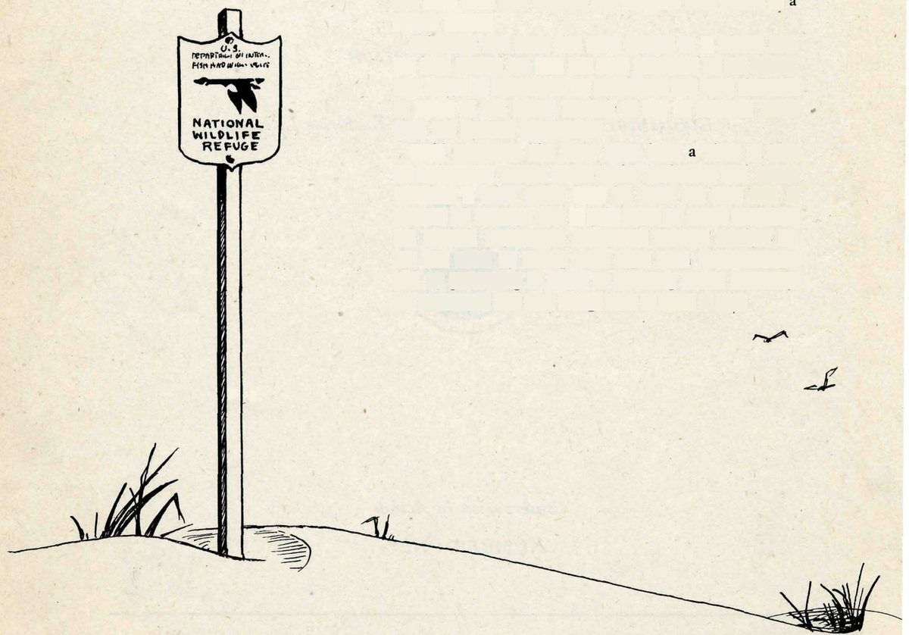
The National Wildlife Refuge at Chincoteague, Virginia, is one of the newest in a chain of sanctuaries placed along the flight lanes of the waterfowl. Coming down from the north the principal links of the chain are Parker River, Montezuma, Susquehanna, Brigantine, and Bombay Hook. Then from Chincoteague the links run south, through Back Bay and Pea Island, Mattamuskeet and Cape Romain.
Chincoteague, like other waterfowl refuges, is needed because birds migrate, and because in so doing they expose themselves to great dangers. The migration of birds is one of the ancient spectacles of earth, and one of the most mysterious. But while we know little about why birds migrate or how they find their way over enormous distances, common sense tells us this: like human travelers, birds must have places where they can stop in safety for food and rest.
Once there were plenty of natural hostelries for the migrants. That was before our expanding civilization had drained the marshes, polluted the waters, substituted resort towns for wilderness. That was in the days when hunters were few. In those days our waterfowl probably numbered 200 million. Now only a small remnant of this number is left.
If we are to preserve the remaining waterfowl, and the sports and recreations which depend on them, we must set apart for the birds refuges like Chincoteague, where they may find these simple and necessary creature requirements: food, rest, security.
Chincoteague was selected as a refuge site because the biologists of the Fish and Wildlife Service, after years of searching for the best spot to fill the gap between the refuges at Bombay Hook and Back Bay, decided that this wild seacoast island on the Eastern Shore of Virginia would provide protection and breeding territory for the greatest number of species. Purchase of this site for a refuge was approved by the Migratory Bird Commission in 1942; and the refuge was formally placed under administration by the Fish and Wildlife Service in 1945.
Two things determined the location of the Chincoteague Refuge: its physical features, combining beaches, dunes, marshes, woodland, and protected waters; and its position with relation to the flight lanes of the birds. As to the first:
About nine thousand acres in area, the refuge occupies the southern third of Assateague Island, separated from Chincoteague Island by a narrow channel. Assateague is one of the barrier islands typical of the Middle Atlantic coast, never more than three miles from shore to shore, lying between Chincoteague Bay and the sea. Seen from the air, as the migrating waterfowl coming in from the north must see it, its eastern border is a wide ribbon of sand that curves around in a long arc at the southern end of the island to form a nearly enclosed harbor.
Back from the beach the sand mounts into low dunes, and the hills of sand are little by little bound and restrained by the beach grasses and the low, succulent, sand-loving dune plants. As the vegetation increases, the dunes fall away into salt marshes, bordering the bay. Like islands standing out of the low marsh areas are the patches of firmer, higher ground, forested with pine and oak and carpeted with thickets of myrtle, bayberry, sumac, rose, and catbriar. Scattered through the marshes are ponds and potholes filled with wigeongrass and bordered with bulrushes and other good food for ducks and geese. This is waterfowl country. This is the kind of country the ducks knew in the old days, before the white man's civilization disturbed the face of the land. This is the kind of country that is rapidly disappearing except where it is preserved in wildlife sanctuaries.
The pattern of the flyways, more than any other fact, determines the location of the waterfowl refuges. A flyway is more than a migration route—it is a whole geographic region. There are four such flyways in the United States: the Atlantic, the Mississippi, the Central, and the Pacific. Although the breeding grounds of the various flyways overlap, each has its own wintering grounds, and a complex system of migration paths leading from winter to summer areas.
It is a peculiar fact of bird biology that waterfowl have a hereditary attachment for one particular flyway, and with rare exceptions never transfer from one to another. This means that each flyway must provide everything the birds need—suitable breeding areas, ample wintering grounds, and safe migration routes connecting them.
The Chincoteague Refuge is an important way station on the Atlantic flyway. It is located at a strategic point, an area where several of the most heavily traveled lanes of waterfowl traffic converge.
One of these routes begins at the very top of the world—the summer home of the greater snow goose and the Atlantic brant in northern Greenland and the islands of the Arctic Sea. As the snow geese and brant come down by this route across northeastern Canada, they are joined by Canada geese and black ducks and other waterfowl from the shores of Hudson Bay and the Maritime Provinces of Canada. Some of these birds come down the coast. Others come via Lake Champlain and the Hudson Valley, still others via the Finger Lakes of New York to the mouth of the Susquehanna and so to the Chesapeake.
In the latitude of the Delaware and Chesapeake Bays, the Atlantic coast route receives an important tributary from the west. This tributary route is like a river that has many different headwaters scattered over a vast territory, for it has its beginnings in the Prairie Provinces of Canada, the Mackenzie Delta, eastern Alaska, Ontario, and the States bordering the Great Lakes. From the Great Lakes region, the route crosses the mountains of Pennsylvania and strikes the Atlantic coast in the vicinity of the Delaware and Chesapeake Bays. This is the migration path followed by the majority of the ducks of the Atlantic flyway. Among them are scaups, redheads, pintails, baldpates, teal, canvasbacks, old squaws, some black ducks, some Canada geese. For many of these birds, Chincoteague is the first refuge encountered on the long transcontinental journey.
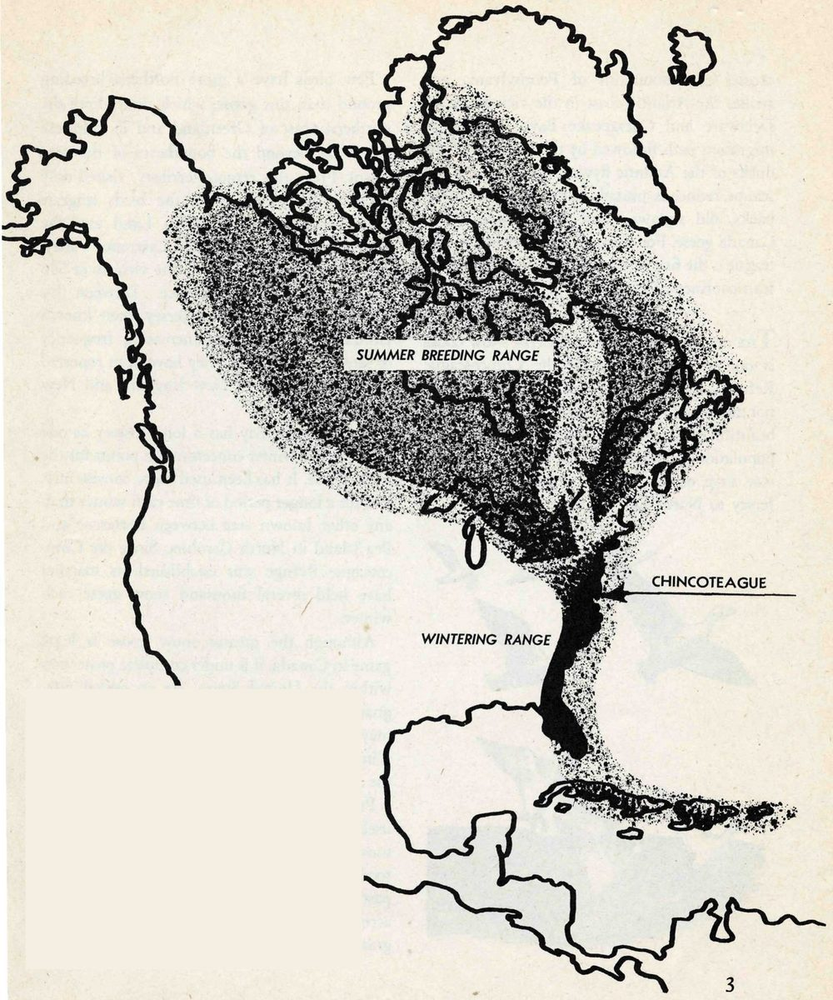
There are several reasons why refuges are particularly needed within the Atlantic flyway. Although this flyway has enormous nesting areas its wintering grounds are very small and lie in a densely settled part of the United States. The Atlantic flyway was affected by the general decline that reduced the populations of ducks and geese to a very low point early in the 1930’s. It has made less progress toward recovery than most other areas. Since 1944 its waterfowl have again been declining sharply.
The conservation of the greater snow goose is one of the purposes of the Chincoteague Refuge. Estimates vary, but probably there are not more than twenty or thirty thousand of these beautiful white geese in the world. This entire population spends the winter months on a narrow strip of the Atlantic seacoast from New Jersey to North Carolina.
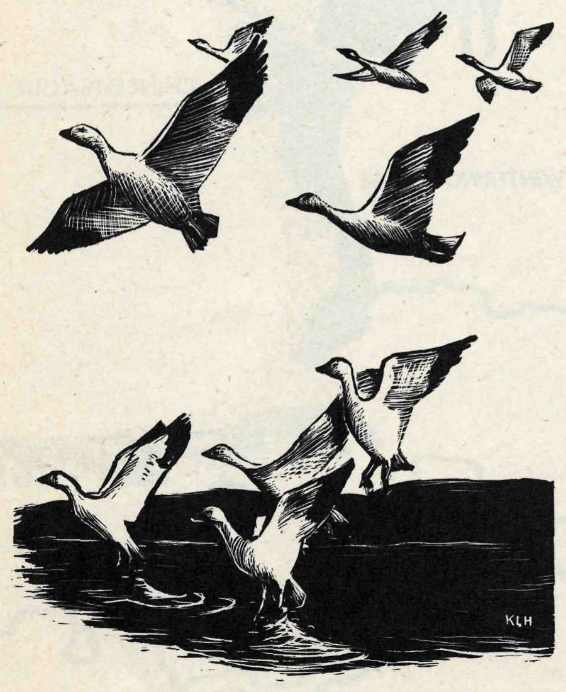
Few birds have a more northern breeding ground than this goose, which nests along the northern coast of Greenland and in Ellsmere Land, far beyond the boundaries of the continent. From this remote territory, visited only occasionally by explorers, the birds migrate south, probably across Baffin Land and the Province of Quebec, to the St. Lawrence Valley. The birds habitually stop in the vicinity of San Joachim on the St. Lawrence. Between this point and Fortescue, New Jersey, their known landfalls are few. With increasing frequency of late years, however, they have been reported during migration in New England and New York.
Chincoteague Bay has a long history as one of the major winter concentration points for the snow goose. It has been used more consistently, and for a longer period of time each winter than any other known area between Fortescue and Pea Island in North Carolina. Since the Chincoteague Refuge was established its marshes have held several thousand snow geese each winter.
Although the greater snow goose is legal game in Canada, it is under complete protection within the United States. As an added safeguard, the related species, the lesser snow goose, may not be shot on the Atlantic coast because it is impossible for hunters to distinguish between the species in flight.
Protection against shooting is not enough in itself to insure the welfare of the populations of snow geese. The birds must also find abundant food within their restricted winter range. Their pastures are the salt meadows—the acres upon acres of tough rooted salt marsh hay or cordgrass, Spartina. The geese feed on the roots of these grasses. Once there was an abundance of marsh land along the coast, but much of it has been lost by draining and filling. Unless some natural marsh areas are set apart for the use of wildlife, species like the snow goose cannot survive.
Except for the whistling swan, the snow goose is the largest white bird that will be seen on the refuge. The black wing tips show clearly in flight, contrasting sharply with the snowy white of body and wing. Look for snow geese in season in the Ragged Point marshes, where they are likely to be feeding, pulling out the marsh grass by its roots. At times they may be seen flying over the bay or ocean, often in a triangular formation, close to the surface of the water.
The American brant, a small goose seldom found far from the sea, is particularly in need of the protection given by waterfowl refuges. Like the snow goose, it breeds in far northern regions and winters on a small section of the Atlantic coast from New Jersey to North Carolina. It migrates chiefly over water, and its distribution within the United States is confined almost entirely to a narrow belt along the coast.
Brant on their fall migration arrive at Chincoteague about November, remaining until the latter part of March. As a rule, between 2,500 and 3,000 winter on the refuge. The Brigantine and Pea Island Refuges also have wintering flocks.
Heavy shooting and draining of marshes are ancient enemies of waterfowl, but a few years ago the brant was faced with a new menace—the complete destruction of its winter forage. Eelgrass has always been the chief winter food of the brant. Heavy growths of the ribbonlike plant formerly covered the tide flats in almost every coastal bay and sound from North Carolina to Nova Scotia. About 1930 a blight suddenly struck the eelgrass all along the coast. Within the space of a year or two most of it had disappeared. This had an immediate and very nearly disastrous effect on the brant. Without their usual food to help them withstand the rigors of winter, the populations of these small geese very rapidly declined.
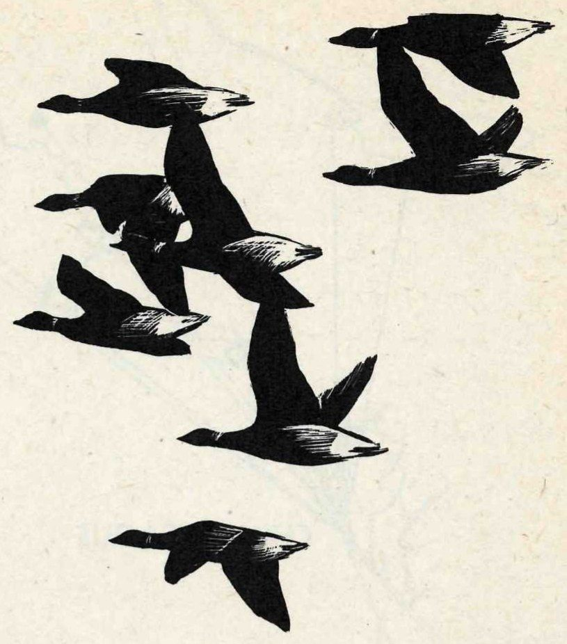
Reports of ornithologists all along the coast indicated that the status of the brant had become alarming. Counts by Charles Urner illustrate the decline: from 28,800 brant estimated by Urner as the 1927-28 winter population of brant on the New Jersey coast, the birds declined to 5,400 in 1931-32 and to 2,320 in 1932-33. To give protection to the remaining birds, the Federal Government declared a closed season on brant in the Atlantic Coast States in 1933. During recent years the January inventory of waterfowl, taken annually by the Fish and Wildlife Service in cooperation with State conservation agencies, has indicated an encouraging increase in the populations of brant as the birds have turned to new food and as the eelgrass, here and there, has made a slow recovery. The brant was returned to the list of game birds in 1944.
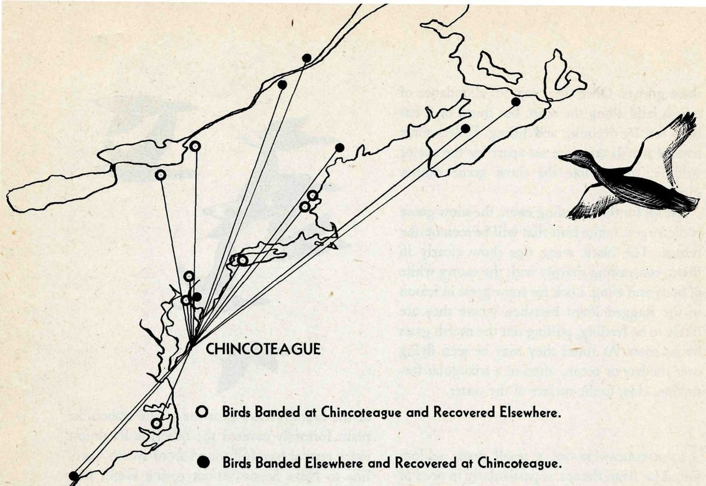
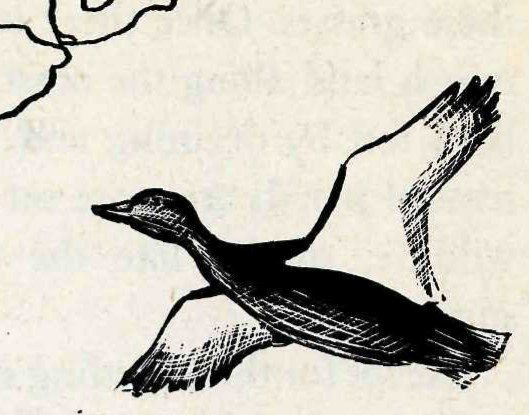
Assateague Anchorage is a good place to look for the brant that winter on the refuge. The brant is smaller and shorter necked than the Canada goose; resting on the water it appears mostly dark, although showing the white under tail coverts. Unlike most geese, it habitually gets its food by “tipping” in the shallow water. In flight, brant move swiftly in long, undulating lines, seldom in the V formation of the Canada goose.
The black duck, the most important of all waterfowl to the eastern gunner, is the predominant species at Chincoteague. It is present in the refuge area throughout the year. From a small breeding population in the summer it builds up to a peak of nine or ten thousand birds by midwinter. During the spring months, with the influx of transients, the refuge is host to about 12,000 black ducks.
The black duck nests chiefly in the northern and eastern sections of the continent—in Ontario, Quebec, Nova Scotia, New Brunswick, Labrador, and Newfoundland, also in northeastern United States. Apparently the black ducks that winter at Chincoteague or migrate through this area use three principal routes in traveling from the northern breeding grounds to their winter quarters. These routes have been revealed by the actual recoveries of banded birds, and the comparison of the place of banding with the place of recovery.
One of the migration paths comes down from the vicinity of Lake Ontario across eastern Pennsylvania to the head of the Chesapeake and Delaware Bays. Another comes from the valley of the St. Lawrence down Lake Champlain to Long Island and thence down the coast. The third and apparently the most traveled route comes down the Atlantic coast from eastern Canada and New England. (See map.) Returns from south of Chincoteague have come from North and South Carolina.
These facts seem to mean that the majority of the black ducks that use the Chincoteague Refuge have been produced in eastern Canada and probably Maine, and that they travel through most of the Atlantic Coastal States to reach their wintering grounds. This is a graphic illustration of the fact that waterfowl conservation is a cooperative problem, and that a waterfowl refuge benefits not only the State in which it is located but many other States as well.
Hardy, wary, always adaptable, the black duck has held its own rather better than most other species. When drought ruined the breeding grounds of central Canada, most of the prairie-nesting ducks found themselves in serious trouble; the black, which nests over a vast territory east of the prairie country, was little affected.
On the other hand, the black duck, like many other waterfowl, has felt keenly the loss of the eelgrass. It is true that the eelgrass itself did not form an important part of the black duck’s diet. But the many small sea animals—mussels, crustacea, worms, and the like—that lived on and among these plants were welcome variations in the predominant vegetable diet of the black duck. These were, of course, lost along with the eelgrass.
Fortunately, Chincoteague provides other foods for the ducks. Wigeongrass, which fills every pond and water hole on the refuge in the fall, is one of the best duck foods.
The Chincoteague Refuge also provides good nesting cover, with a minimum of interference from man and predatory animals. Although near the southern limit of the breeding range, the refuge adds more than a hundred young black ducks to the population each year.
Of other waterfowl at Chincoteague, the pintail and the baldpate (locally called wigeon) are among the most abundant. During an average spring season, for example, about 9,000 pintails use the refuge and about half as many baldpates. Other ducks that may be seen on the refuge marshes or feeding in its ponds are the greater and lesser scaup, green-winged teal, blue-winged teal, mallard, shoveler, gadwall, hooded merganser, ringneck, ruddy duck, and wood duck. Offshore there are thousands of scoters each winter. Smaller numbers of old squaws, buffleheads, American goldeneyes, and red-breasted mergansers appear regularly in the waters near the refuge.
Because Chincoteague is on one of the principal goose flight lanes of the Atlantic coast, large concentrations of Canada geese occur here during the spring and fall migrations. A thousand or more remain over winter.
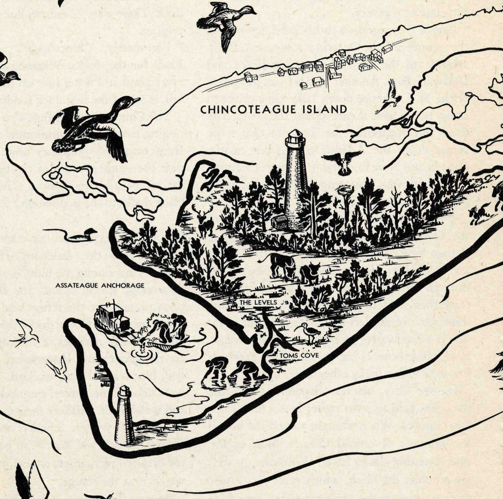
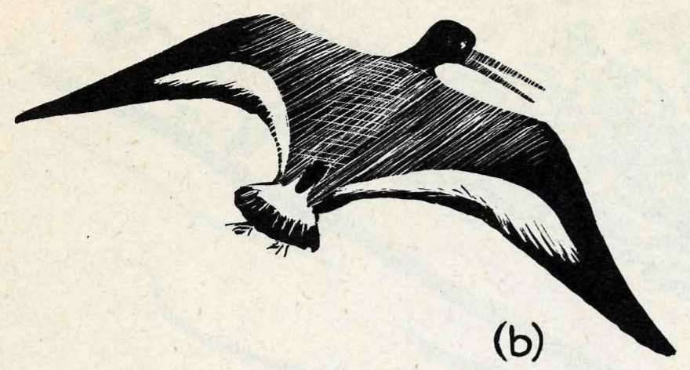
Besides waterfowl, most of the common eastern birds have been reported from the Chincoteague area, and the field ornithologist can always count on running up an interesting list. Some 240 species have been identified on the refuge or in its immediate vicinity.
Shore birds as a group travel farther in their annual migrations, see more sunlight and less darkness than almost any other birds. Some of them nest near the northernmost limits of land; some winter in the most southern parts of South America. In the course of their annual flight between summer and winter homes, they visit our coasts, their migrations in general following the shore lines.
During the 1800’s and early 1900’s the shore birds were all but destroyed by heavy shooting. They were a favorite target of the sportsmen of that generation; they were also the quarry of market gunners, who shot them for the morsels of food their small bodies yielded. In the 1880’s and later, the craze for feathers to adorn women’s hats played its part in the slaughter.
Today the shore birds are protected by Federal law. Their habits make them particularly vulnerable: they raise a single brood in a season, lay on an average only four eggs, nest on the ground, and travel in dense flocks over the open seacoast. They could not long withstand the pressure of modern shooting.
While the nesting grounds of most shore birds are in remote areas, as yet little disturbed by modern civilization, this is not true of the wintering grounds. The Hudsonian curlew, several of the plovers, and many others winter in the grassy plains of Brazil, Argentina, and Peru. There agricultural developments have greatly reduced the areas suitable for the birds. Then, too, many of the shore birds are still subjected to heavy shooting in the West Indies and South America. For these reasons, they need all the help we can give them to maintain their numbers. By providing good feeding grounds along their migration routes, wildlife refuges are important aids in the conservation of the shore birds.
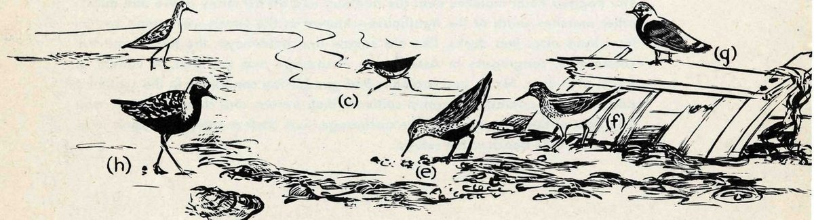
Ornithologists—both amateur and professional—find the Chincoteague Refuge one of the best places in the Middle Atlantic region to enjoy the spectacle of shore bird migration. Between 30 and 40 species have been recorded there during the spring and fall migrations.
Probably the best spot on the refuge to see a great variety of shore birds is along the shores of Assateague Anchorage. Look for curlews—large, rather long-legged brown birds with a distinctive sickle-shaped bill—in the fringes of marsh grass that border the coves, or on the shellfish reefs. The curlews thrust their beaks deep into the holes of the fiddler crabs, or probe the mud of the reefs. Other large shore birds, slightly smaller than the curlews, are willets and yellowlegs (a). These birds feed mostly in muddy places, often on the banks of marsh creeks on the ebb tide. The whistle of the yellowlegs, high and clear but with a peculiarly soft quality, is one of the characteristic sounds of such places. Crow-sized, black and white birds with long red bills are oyster-catchers (b).
The smaller shore birds gather in enormous flocks on the mud flats to feed and rest. A single flock often contains a mixture of many species—the sparrow-sized “peeps” or least (c) and semipalmeted sandpipers (d), the larger red-backed sandpiper (e) with its distinctive black belly, and sometimes the rarer Baird’s, white-rumped (f), western, and buff-breasted sandpipers. Sometimes a highly colored bird stands out among the others—a turnstone (g), unmistakable in its clean, sharp pattern of black, white, and chestnut.
The large black-bellied plover (h), one of the handsomest of the shore birds, with its pale back and black under parts, is more likely to be seen singly or in small parties of its own kind. Even when all the shore birds within sight start up in alarm, wheeling over the flats in one of their indescribably intricate mass flights, the black bellies tend to keep to themselves.
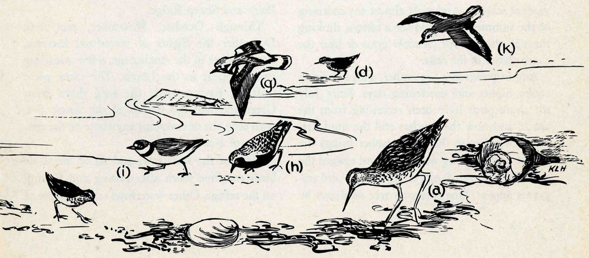
On the ocean beaches look for the semipalmated or ringneck plover (i), the sanderling (k), and the semipalmated sandpiper. These birds feed at the very edge of the surf, snatching up the small crustaceans washed out of the sand, always seeming about to be overwhelmed by a breaking wave, but always somehow escaping.
The changing seasons at Chincoteague are reflected in the changing populations of the birds. The summer months are quiet. Except for a few black ducks and a handful of blue-winged teal, the thousands of waterfowl that wintered on the refuge have gone north. They are now dispersed over an immense area, from Greenland to Alaska. The migratory flights of waterfowl from the south have paused briefly at the refuge and now they, too, are gone.
Up in the marshes around Ragged Point the black ducks have been nesting. In April you might have found their nests here and there under the bayberries; in June the broods of ducklings, with their mothers, begin to appear in the slashes. Around the Levels there are a few broods of the blue-winged teal, making its first slow comeback as a nesting bird in this region after years of scarcity. And early almost any morning of the summer you could see a bittern slinking through the tall salt meadow grass or hear the sharp clatter of the rails.
August passes into September, with its briskly cooler nights and shortening days. Since July the shore birds have been returning from the north, and now the beaches and the mud flats are crowded with them. September brings the first of the returning waterfowl, and toward the end of the month flocks of small land bird migrants appear. One morning tree swallows by the thousand are lined up, wing to wing, on the Coast Guard telephone wires for miles along the beach. Heavy flights of robins and flickers pass through; hawks—mostly the narrow-winged falcons and the accipiters—sweep down the coast toward the south. Then in October, when the marshes are silvered with frost in the mornings, the waterfowl begin to pour in from the north. Crossing the Levels, you see flights of pintails circling the marshes, dropping down into the ponds. After a night of heavy migration, the refuge suddenly takes on new life as flocks of canvasbacks, redheads, teal, and baldpates rise into the air in noisy thousands.
Offshore, beyond the white lines of breakers, great numbers of sea ducks appear. Rafts of scoters parallel the beach from one end of the refuge to the other. Old squaws and goldeneyes congregate in the nearly landlocked harbor of Assateague Anchorage, following the oyster dredgers. These sea ducks flock around the boats so closely they are almost run down, diving for the small sea creatures and plants stirred up by the dredges. Canada geese are increasing day by day, flocking in to the Levels and Toms Cove, a few settling in around the marshes of Ragged Point and Sheep Ridge.
Through October, November, and into December the flights of waterfowl increase. Brant gather in the Anchorage, a few whistling swans appear in the Levels. The snow geese drift in, having made the long flight from Greenland and the islands of the Arctic Sea, with only one or two stops anywhere on the continent of North America.
Some of the waterfowl and all of the shore birds continue south after resting and feeding on the refuge. Other waterfowl remain, some of almost every Atlantic coast species. At Chincoteague the winters are not, as a rule, severe. The blizzards and the heavy freezes that sometimes lock the Chesapeake in ice from shore to shore are here tempered by the bordering sea, and it is a rare winter when there is not plenty of open water on the refuge where the ducks can get at the wigeongrass and the sea lettuce, and plenty of snow-free marsh where the geese can pull up the roots of the salt meadow grasses.
The turn of the year finds about 30,000 ducks wintering on the refuge itself, another 10,000 or so on the bordering ocean and Chincoteague Bay. As for the geese, a fairly mild winter may see nearly 10,000 of them on the refuge—perhaps 5,000 snow geese, several thousand brant, a thousand Canadas. Black duck, baldpate, and pintail are more numerous than any other kinds of fresh-water ducks; scoters and scaups outnumber all other sea ducks.
March is the time of transformation, the month when the great migrations start. Flock after flock, the ducks, geese, and swans leave for the north. Others come in from the south, linger briefly, move on. By late April, all the waterfowl are gone, except for a few black ducks, teal, and baldpates.
April is the month of the shore birds. Although on an occasional day in March you may hear the high, clear whistle of the yellowlegs, the full tide of the shore bird migration does not reach the refuge until April. The piping, Wilson’s, and killdeer plovers, the willet, the spotted sandpiper, and the oyster-catcher stay throughout the summer as nesting birds. There are also little colonies of nesting terns, laughing gulls, and black skimmers on the beach at the southern end of the refuge, known as Fishing Point. But for the most part the activities of the refuge have reached their lowest point by midsummer—the ebb between the flood tides of migration.
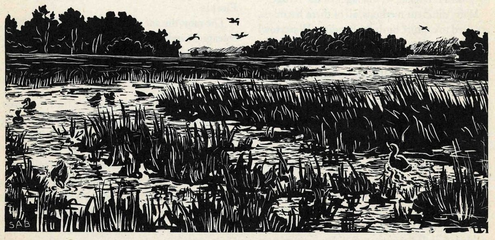
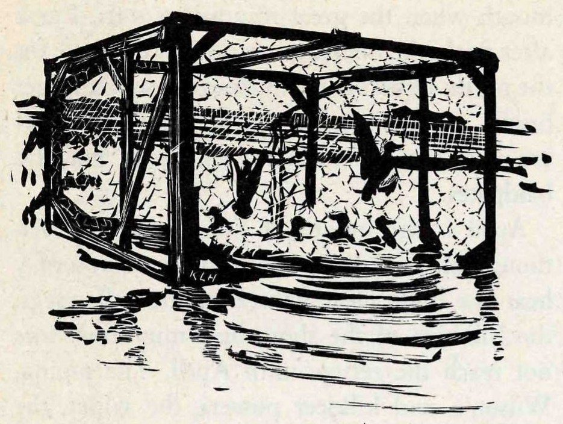
Bird banding, an important activity at many Federal waterfowl refuges, helps trace the intricate pattern of bird migration. In the short time since the Chincoteague Refuge was established, banding done on this refuge has revealed many interesting and useful facts about the birds. These records are supplemented by the results of earlier banding in this area, carried on chiefly by John H. Buckalew, manager of the refuge.
Many different methods, all of them harmless, are used to capture birds for banding. Waterfowl usually are taken in a large, cagelike trap baited with corn. Once captured, the bird is banded by placing a numbered aluminum band around its leg. The band carries an inscription: “Notify Fish and Wildlife Service, Washington, D. C.”
So far, most of the birds banded at Chincoteague have been black ducks and pintails. But during the winter of 1945-46, ten different species of ducks, totaling 1,617 individuals, were banded on the refuge.
How migrating waterfowl make use of the chain of refuges along their flyways is clearly illustrated at Chincoteague—first, by recoveries of birds banded there, second, by recoveries at Chincoteague of birds banded elsewhere. These recoveries so far link Chincoteague with the following Federal waterfowl refuges: Parker River, Mass.; Bombay Hook, Del.; Mattamuskeet, N. C.; and Cape Romain, S. C.
Banding of black ducks has showed us how the migrating birds come down from Canada and New England (page 8); it has also given interesting information about the way the ducks move about during the winter. Apparently they roam about over an area with a radius of a hundred miles or more. For instance, two black ducks banded at Chincoteague in December 1945 were recovered the following month, one in Salem County, N. J., more than 100 miles away, the other at Chesapeake City, Md., a distance of 115 miles.
As for the pintails, banding shows that the migrants that stop over at Chincoteague may continue all the way down the Atlantic coast. Pintails banded at the refuge have been recovered from North and South Carolina and Florida.
The most distant recoveries so far of any Chincoteague-banded birds are these: a common tern recovered in Puerto Rico, and a black duck at Tracadie, Nova Scotia.
As management of its marsh lands increases the production of waterfowl foods, creates more potholes and other water areas for the dabbling ducks, and improves nesting areas, Chincoteague will become increasingly useful as a refuge. About 10 years are needed before the results of management can be fairly evaluated. To see what can be accomplished by management, then, it is necessary to turn to refuges older than Chincoteague.
Bombay Hook Refuge, Chincoteague’s nearest neighbor to the north, was established in 1937. An initial step in developing the refuge has been the creation of a fresh-water area, 150 acres in extent, known as Raymond’s Pool. Already this area, which represents only a part of the proposed fresh-water impoundments, has proved its worth. It is filled with a luxuriant growth of sago pondweed and other fresh-water duck foods and has become an important concentration point for nesting waterfowl.
Management of the Bombay Hook marshes has increased the use of the area by ducks and geese more than 400 percent over a 10-year period. Records show that approximately 30,000 waterfowl were using this area during the fall months in 1936, just before the refuge was established. By the fall of 1942, this figure had been doubled. By the fall of 1945, more than 137,000 waterfowl were stopping for food at the Bombay Hook Refuge before continuing their journey south or settling down to winter in the area.
Then, too, the development of the Bombay Hook marshes has so improved the area as a nesting ground that the refuge annually adds thousands of young ducks to the waterfowl population. When the refuge was established, only nine pairs of nesting black ducks could be found. By 1941, natural breeding of black ducks in the refuge area had so increased that 6,000 young were produced. Two unexpected patrons of the refuge as nesters are the shoveler and gadwall, western ducks that have found suitable nesting conditions within the Bombay Hook Refuge and now regularly produce broods of young there.
Economic uses of the land included within the Chincoteague Wildlife Refuge continue as before the establishment of the refuge.
The famous shellfish country of the Eastern Shore of the Chesapeake surrounds the Chincoteague Wildlife Refuge. Chincoteague oysters have a widespread reputation for quality; perhaps the fact that they grow in water that is almost as salty as the open ocean accounts for their distinctive flavor. Although the region is best known for its oysters, clamming, carried on throughout the year, probably brings a larger income to local fishermen than the oysters do.
The establishment of a wildlife refuge has not interfered with the use of the area for shellfishing. The refuge itself contains about 250 acres of shellfish grounds. These consist of a narrow strip of flats between the tide lines, running in a long arc around the inside of Assateague Anchorage, and bordering the channel between the islands.
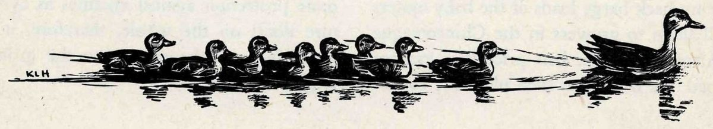
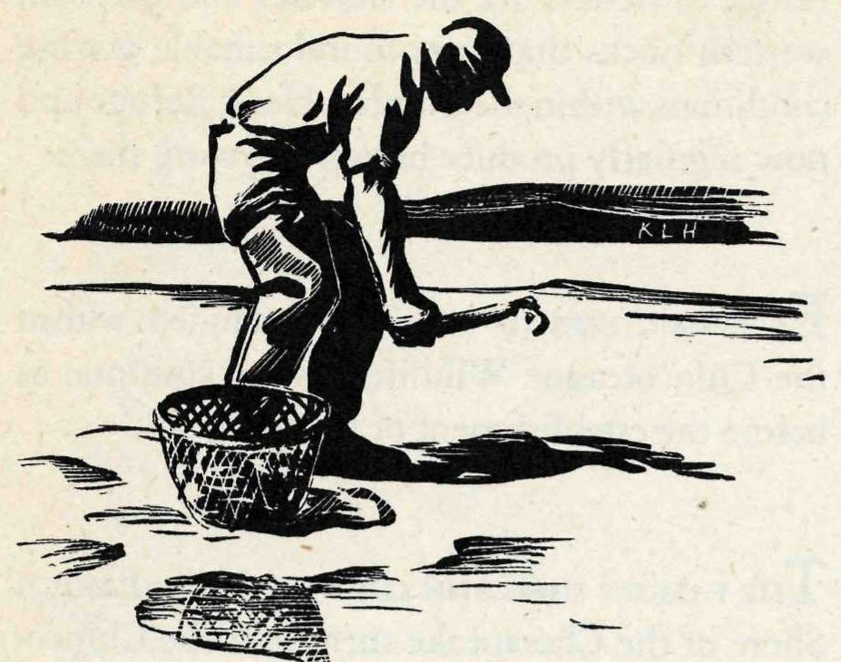
About 184 acres of these grounds are under cultivation. Before the refuge was established, the shellfish area was leased from the former owner of the property. It is now leased from the United States Government. One-fourth of the rental is paid to Accomac County, in which the refuge lies. The balance goes into the United States treasury.
Cultivation of oysters as it is practiced in the Chincoteague area consists of bringing in small, “seed” oysters, planting them on leased grounds, protecting them from natural enemies, harvesting the oysters when they have reached good market size. Fishermen go “down the bay” to dredge the seed oysters from public oyster rocks, then bring back barge loads of the baby oysters and sell them to growers in the Chincoteague area. After getting the best price they can for their load, the fishermen then plant the oysters for the purchaser, on whatever part of his grounds he directs. These planting operations begin in the spring, continue all summer and into the fall. Fishermen spend many days—sometimes several weeks—dredging a saleable quantity of oysters. During the spring and fall they run the risk that a sudden freeze may kill their barge loads of oysters before they have disposed of them.
Clamming is practically a year round occupation in the Chincoteague area. At low tide the clammers work the exposed mud flats in the marshes and scattered through the channels between the islands. The clams lie buried in the mud, in warm weather only a short distance beneath the surface.
Common methods of clamming during the summer are “signing”—watching for the signs of a clam’s presence in the mud and quickly digging it out with a short-handled, pronged hoe—and wading. An experienced wader, working in water neck-deep, feels a clam under foot, quickly slides it up his leg, and tosses it into his sack. During the winter clams are taken by tonging.
Cultivation of clams is simple. Clam dealers who lease growing grounds save the smallest sizes—called “buttons”—out of each load they buy. They plant these small clams, allowing them to grow before marketing them. Clam culture does not require planting of shells and elaborate protection against enemies as oyster culture does; on the whole, therefore, it is less expensive and the returns to the grower are larger.
The wild ponies of Chincoteague have made the name of this small Eastern Shore island familiar to people all over eastern United States. Chincoteague Island itself is no longer inhabited by feral stock; the herds graze on Assateague, Wallops, and a few other uninhabited coastal islands. But on the last week end of July, in the annual wild horse round-up, animals from nearby islands are brought to Chincoteague to be sold, so this island still gives its name to the wild horses of the entire region.
Although historical facts about the origin of the horses are scanty, there is no dearth of legend. Some say they swam ashore from a vessel shipwrecked off this coast long before there were permanent white settlements in the region. Others will have it that pirates, systematically plundering coastwise shipping, used to put their horses ashore to graze on the islands.
From whatever stock the ponies descended, they are a rugged lot. Smaller than an average horse, larger than an average pony, their coats a bit shaggy and long, they bear the stamp of their wild seacoast environment. They live most of their lives within sight or sound of the surf, they crop the sparse marsh grasses, they shelter wherever they can when wild storms sweep up the coast. Once each year, men from Chincoteague Island come ashore, and the annual Chincoteague pony round-up begins. The animals are driven together on the beach; at low tide they are herded across Assateague Channel, swimming through water shoulder high to a man, to Chincoteague Island and into a 20-acre enclosure. There the annual pony sale is held, many of the buyers coming from hundreds of miles. The Chincoteague pony business is now largely in the hands of the town firemen, who own most of the stock, prepare for and manage the annual pony penning carnival and sale.
The establishment of a wildlife refuge on the southern end of Assateague Island did not interfere with the generations-old custom of grazing stock. Permits to graze 300 head of horses and cattle within the refuge property are now held by residents of Chincoteague. One-fourth of the annual rental for this economic use of the refuge land reverts to the counties in which the refuge lies. The presence of these grazing animals is not detrimental to the waterfowl for which the refuge was established. From the standpoint of the owner of the stock, the refuge has proved a better grazing ground than an uninhabited island. The refuge manager, patrolling the grounds, keeps a watchful eye on the stock and more than once has come to the rescue of a pony mired in the marshes, saving it from drowning on the high tide.
Use of the Chincoteague Refuge for recreational purposes may be arranged through the refuge manager, who will give permission to visit the refuge at any time that the proposed use of the property does not conflict with the needs of the birds.
The establishment of the Chincoteague Refuge has preserved, in a wild and unspoiled state, a stretch of typical Atlantic seacoast for the enjoyment of those who find relaxation and refreshment in wilderness areas.
This refuge is one of the best places on the Middle Atlantic coast for observing the seasonal migrations of shore birds, and is also a good vantage point for seeing migrating hawks and small land bird migrants. For this reason it is visited by many ornithologists.
The Chincoteague Refuge provides a demonstration of practical conservation for Boy and Girl Scouts, Sportsmen’s Associations, Garden Clubs, Audubon Societies, and other bird and nature study groups.
Various organizations in the Chincoteague area regularly use the refuge for recreation or nature study. Scout troops find its varied terrain suitable for hikes and for practice in acquiring special camping skills. A group of horsemen from Chincoteague regularly receive permission to ride on the beach.
Assateague Island is a favorite fishing ground for surf casters. Many of them cross the inlet at Ocean City, Md., to the northern end of the island, and work down on the beach; others cross the channel from the town of Chincoteague. During the height of the surf casting season, as many as 50 anglers sometimes use the refuge beaches on a single week end.
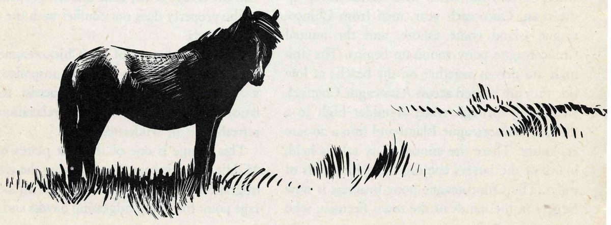
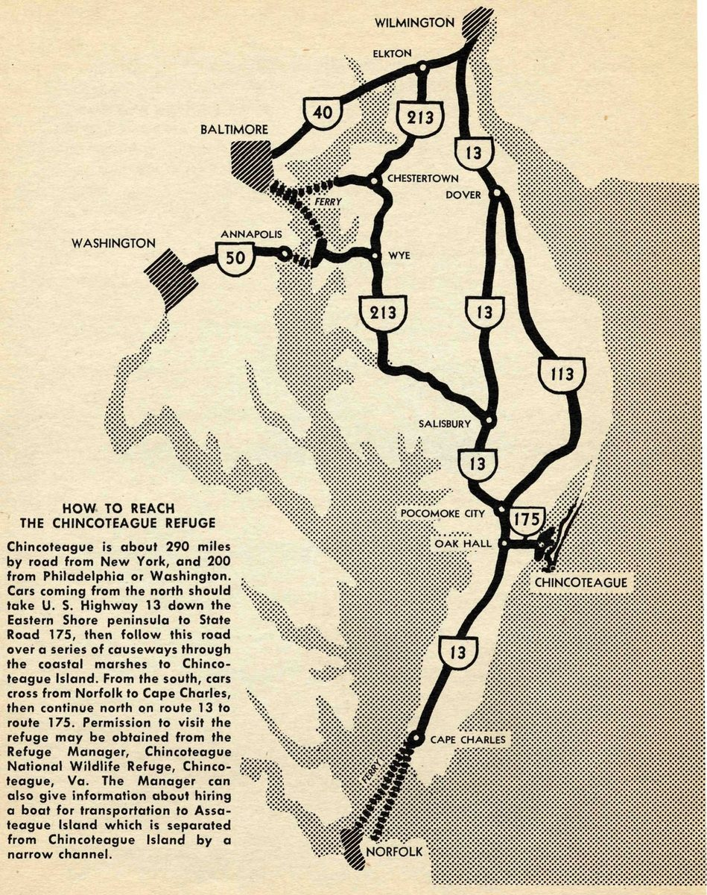
Chincoteague is about 290 miles by road from New York, and 200 from Philadelphia or Washington. Cars coming from the north should take U. S. Highway 13 down the Eastern Shore peninsula to State Road 175, then follow this road over a series of causeways through the coastal marshes to Chincoteague Island. From the south, cars cross from Norfolk to Cape Charles, then continue north on route 13 to route 175. Permission to visit the refuge may be obtained from the Refuge Manager, Chincoteague National Wildlife Refuge, Chincoteague, Va. The Manager can also give information about hiring a boat for transportation to Assateague Island which is separated from Chincoteague Island by a narrow channel.
By Rachel L. Carson · Drawings and photographs by Katherine L. Howe · Conservation in Action, Number Two · 1947
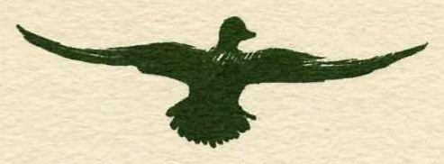
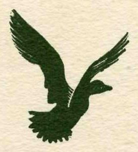
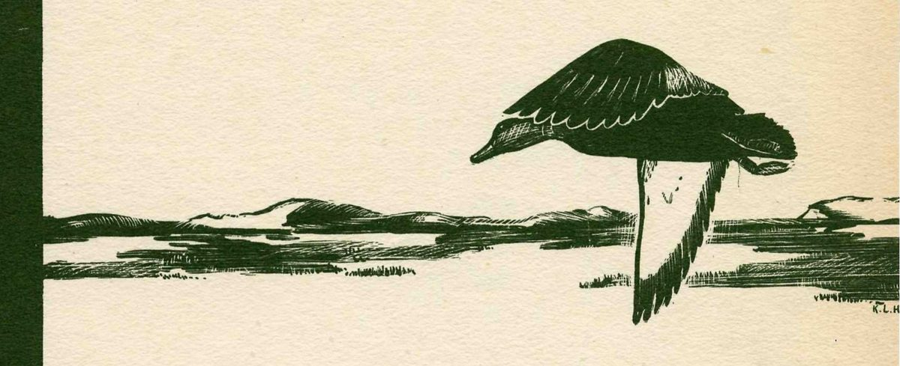
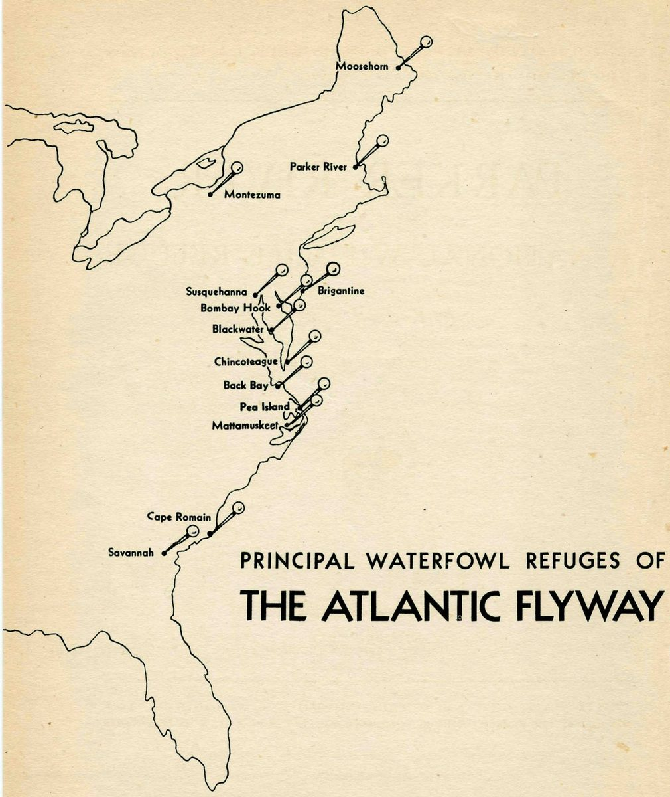
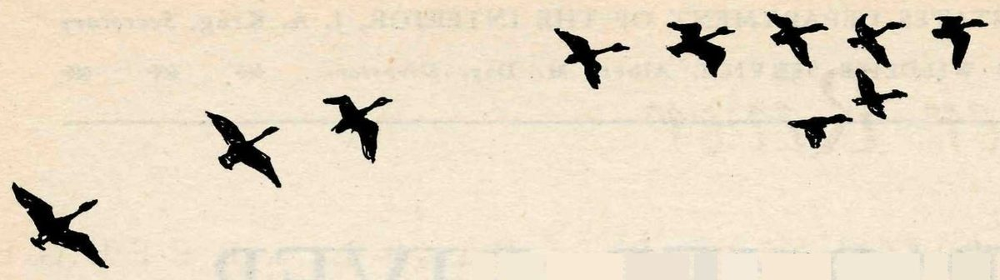
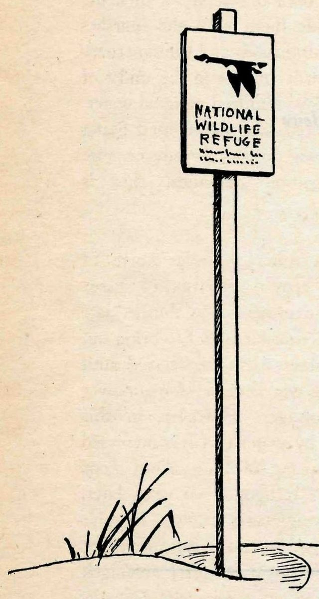
If you travel much in the wilder sections of our country, sooner or later you are likely to meet the sign of the flying goose—the emblem of the National Wildlife Refuges.
You may meet it by the side of a road crossing miles of flat prairie in the Middle West, or in the hot deserts of the Southwest. You may meet it by some mountain lake, or as you push your boat through the winding salty creeks of a coastal marsh.
Wherever you meet this sign, respect it. It means that the land behind the sign has been dedicated by the American people to preserving, for themselves and their children, as much of our native wildlife as can be retained along with our modern civilization.
Wild creatures, like men, must have a place to live. As civilization creates cities, builds highways, and drains marshes, it takes away, little by little, the land that is suitable for wildlife. And as their space for living dwindles, the wildlife populations themselves decline. Refuges resist this trend by saving some areas from encroachment, and by preserving in them, or restoring where necessary, the conditions that wild things need in order to live.
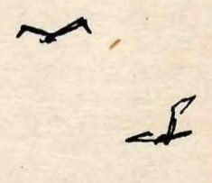
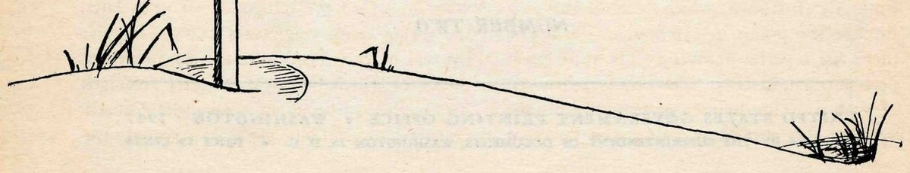
The Parker River National Wildlife Refuge is New England’s most important contribution to the national effort to save the waterfowl of North America. Many million Americans have a direct stake in the success of this effort: the 2,000,000 waterfowl hunters, the millions who find recreation and esthetic pleasure in observing and photographing the birds, and all those, whom there is no way of counting, who understand the value of preserving wildlife as part of America’s natural heritage.
During the several generations in which the United States has been converted from a land preeminently wild and unsettled into an industrial and agricultural country, the waterfowl have been driven from most of the areas where they once lived. During the same span of years, we have seen the rise and decline of market gunning and the steady and continuing rise of hunting for sport.
In this period there have been at least three major declines in the waterfowl population. From the first two, which reached their respective low points in 1915 and in the 1930’s, there was a partial recovery. The third great decline began in 1944. The downward sweep of such a cyclic decline—perhaps this, or the next, or the next—may reduce the flocks of waterfowl to so low a point that there can be no recovery.
To save the wild fowl, one of the most important things we can do is to reserve for their use areas which provide them with the marshes and ponds, the natural foods and the sanctuary that they need in order to live in the midst of our civilization. Two hundred national waterfowl refuges scattered over the United States now provide these things. Whatever else waterfowl conservation demands, this is essential.
Parker River lies some 30 miles north of Boston in the coastal marshes of Essex County, Mass. The refuge was established late in 1942, but its active development to bring out its maximum usefulness had to be delayed until near the end of the war because of manpower and materials shortages. However, in this brief time, its use by waterfowl has increased sharply. In the spring of 1944, about 2,000 waterfowl used the refuge. Two years later, the spring count was nearly 15,000. Regular patrons of the refuge include 19 species of ducks, of which the great majority are black ducks, and 1 species of goose, the Canada. Greater snow and blue geese are reported casually. About 70 birds of other species make regular use of the refuge and many others occur as transients.
The Essex County marshes are within the Atlantic flyway, which is one of four great geographic divisions into which the North American continent may be divided according to the ways of waterfowl. The term “flyway” as ornithologists use it today includes the breeding and wintering grounds and most of the migratory paths that connect them. Birds have a hereditary attachment for one particular flyway and as a rule never transfer from one to another.
A striking fact about the Atlantic flyway—a fact which dominates the conservation problem—is the extremely limited area of its winter range compared with the vast extent of its breeding grounds. The nesting area extends from Greenland across much of northern Canada; the wintering grounds are confined to a narrow strip of coastal marshes along the east coast of the United States. A map of the flyway looks like a huge, distorted funnel with a long slender stem. Imagine that for one-half of the year all the contents of the funnel have to be contained within the stem and you can understand the compression of birds within their winter range. This fact makes wildlife refuges especially important on the Atlantic flyway.
Parker River is the only Federal refuge operated principally for waterfowl on the northern part of the Atlantic flyway. It lies in the path of a great many of the ducks and geese that fly south in the fall from the eastern Canadian Provinces and from northern New England. Some of these birds follow a route roughly corresponding to the outlines of the seacoast; others fly overland from inland breeding grounds and make their first contact with the coast in the vicinity of Parker River.
These facts have in recent times been substantiated by bird banding. Recoveries of banded birds are demonstrating clearly the pattern of migration. The general route of the waterfowl has been known for generations, however, and has been fully recorded in many publications by New England ornithologists. Dr. Charles Townsend pointed out as early as 1905 that Essex County (site of Parker River) lay “in one of the great highways of bird migration.” Dr. John Phillips rated Plum Island worth a visit to see “all sorts of migrants.” Edward Forbush years ago declared it “the most important region on our coast” in which to locate a bird sanctuary. In the early 1930’s the Massachusetts Audubon Society acted upon this advice, acquired some 1,600 acres in the central portion of the island, and converted it into a sanctuary. This former Audubon Society sanctuary is now part of the National Wildlife Refuge.
Parker River is a link in the chain of refuges established at carefully chosen intervals on the Atlantic flyway, so that the migrating waterfowl may find sanctuary and food at least every few hundred miles of their journey within the United States. Of the coastal refuges of the flyway, the migrations of the birds link Parker River toward the north with Moosehorn, near Calais, Maine, and toward the south with Brigantine on the ocean coast of New Jersey, and Bombay Hook, almost directly west on the shores of Delaware Bay. Then come Blackwater in Maryland; Chincoteague and Back Bay, Virginia; Pea Island and Mattamuskeet in North Carolina; Cape Romain in South Carolina; and Savannah on the border between South Carolina and Georgia.
Waterfowl sanctuaries must be located in the kind of country that attracts birds, provides proper food for them, gives them suitable places to rest before making the next hop on the long migratory flight. Parker River is this kind of country .
Plum Island, the heart of the refuge, is a long, narrow, coastal island. It begins where the Merrimack pours its waters into the Atlantic and ends about 9 miles to the south at Ipswich Bay. To get a panoramic view of Plum Island, climb one of the highest sand dunes—the dune topped by the Army Observation Tower is one of the best lookout points. As your eyes range from east to west, you see five totally different kinds of country as the birds would classify it, five different zones of life each containing a different community of animal life. These regions are the ocean beach, the dunes, the thickets, the salt meadows, and the tidal flats of the salt marsh creeks.
Eastward from our observation point is the immensity of the Atlantic, nothing but water between you and Spain. Outlined by the white surf lines, a sandy beach runs the length of the island. The large grains of the Plum Island sand do not pack to a hard surface; for this reason driving on the beach is difficult and should be indulged in only by those who know local conditions and are experienced in driving on sand.
On the landward edge of the beach, where the beachgrass Ammophila and the silvery-leaved dusty-miller have begun to anchor the shifting grains, the dunes begin. Their contours are often steep, and as you look southward over the expanse of sand hills you see that the dune zone is pitted with many sandy depressions like bomb craters, their conical sides almost bare of plant growth. Except in these places, the dunes are widely covered with a low, sage-green carpet of the plant Hudsonia, helping to hold the shifting sand and prevent the sea beach from engulfing the land. A scattered growth of bayberry and poison-ivy begins midway across the dunes, gradually becomes more dense, and merges with the thickets that run down the center of the island. Cranberries grow abundantly in the low, wet places among the sand hills.
The shrubs, vines, and small trees that form the zone of thickets—the midrib of the island—are the home of the small land birds and give excellent cover and food for the pheasants. Probably the island supports from 60 to 75 pheasants—the only upland game bird on the island. Deer find good browsing here, as well as places of concealment from the casual eye. Most abundant plants are wild rose, sumac, beach plum, bayberry, black alder, choke cherry, pitch pine, aspen, and the ever present greenbrier.
Lying to the west, almost like another vast green sea, are the salt meadows. The winding Plum Island River, the lower reaches of the Parker, and all their small, meandering tributaries traverse the marshes with an intricate series of open-water canals. Scattered ponds or pot holes bring down the migrating wildfowl to feed on the water plants that grow in them.
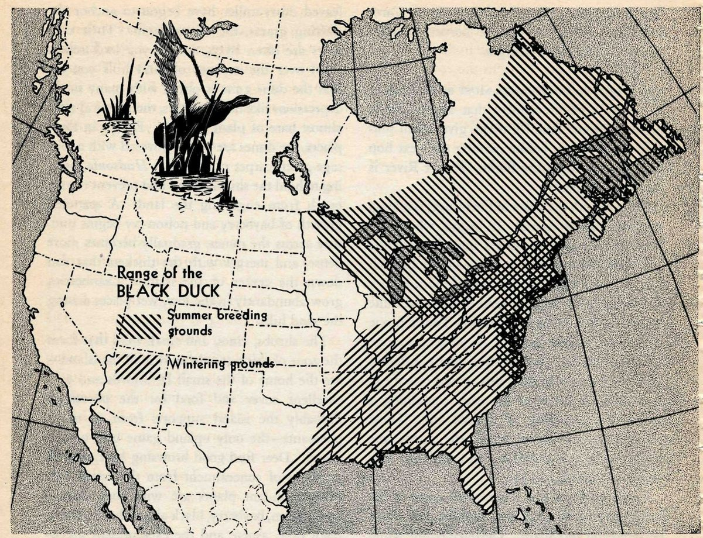
Look out over the marshes when the tide is high and you see nothing but grass and water. But look again when the tide is on the ebb and you will see that every creek has a border of black mud. At dead low tide the small creeks are completely drained; even the large ones have only a central channel in the midst of a great expanse of mud. These are the clam flats, home of the soft-shell clam.
The conservation program at Parker River is designed first of all to restore and if possible to increase the black duck population. The refuge has many other uses and many values, but these are secondary to its principal purpose. There is a logical reason for concentrating on the black duck. Of all waterfowl, no other is so typical of New England as this species. From Cape Cod north, it is the only surface-feeding duck present in large enough numbers to maintain hunting for any considerable number of gunners. A serious reduction in the population of black ducks would mean the end of waterfowl hunting for the majority of the New England sportsmen.
For many years, even in the famous “duck depression” of the 1930’s, the black duck held its own better than the ducks that breed in the central prairies of Canada and northern United States, then stricken by drought. However, it did not respond so dramatically to restorative efforts as some other species. In recent years there have been danger signals. Massachusetts observers, including outstanding ornithologists of the region, began as early as 1943 to report a scarcity of black ducks. Again in 1944 the blacks were reported as having fallen off sharply; in 1945 the flight was described as a “complete failure”; in 1946 observers warned that the species was “notably down in numbers.”
We need to know more about the biology of this species to understand fully what has happened to the black duck, normally a hardy and adaptable species, and once so abundant. But this much we know: many areas in northeastern United States where black ducks once nested have been drained out of existence as breeding grounds. Innumerable pot holes have been filled for suburban residential sites and for industrial use. Also, conditions in recent years have been unfavorable in the Maritime Provinces of Canada, now one of the most important black duck nesting areas. Heavy spring rains there flooded out many duck nests in 1945 and 1946.
The present reduced population of black ducks needs the help of wildlife refuges. Parker River and other refuges can to some extent help restore nesting territory within the United States. Refuges south of New England provide necessary wintering areas. The greatest value of the Parker River Refuge lies in the preservation of a natural waterfowl marsh where the birds may break the long migratory flight for rest and food.
Black ducks are to be found at Parker River any month of the year, but in September and October, almost more than any other time, you begin to get the feel of real black duck country as you tramp through the salt marshes of Plum Island. After the lull of midsummer, when only a few ducks are to be found here, migrants are coming in from the north. The great Joppa Flats in Newburyport Harbor are an early rallying point for them as they swing down from Labrador, Nova Scotia, Ontario, Maine, or wherever they may have summered. As you drive out from the town to Plum Island, you can see them gathering in the harbor, small black forms riding the outgoing tide, bobbing like boats at anchor. Today perhaps there are a thousand. Tomorrow morning there may be five thousand; next week as many more.
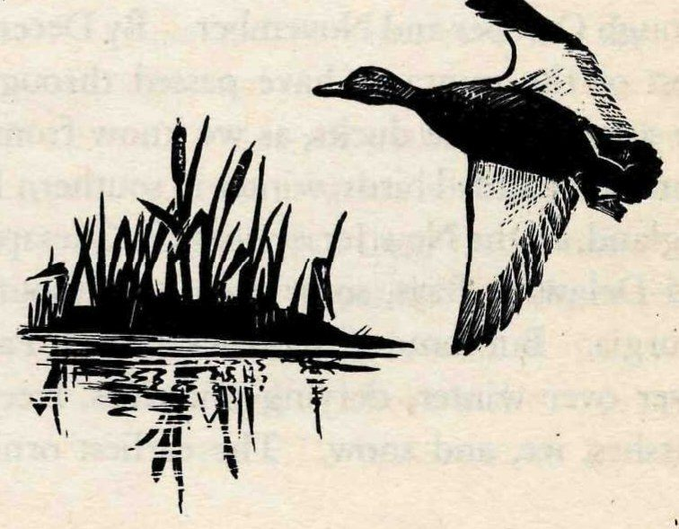
Soon the ducks spread out into the nearby marshes. Seeds of the salt-meadow plants—arrowgrass, bulrushes, tidemarsh waterhemp, pondweeds—are choice duck foods, abundant in the marshes through which Parker River and half a dozen other creeks and small rivers cut their paths to the sea. As the late summer days pass and autumn comes, many ducks gather in the marsh pot holes south of the Cross farm.
In the days when there was no refuge here, the first roar of guns at the opening of the hunting season would send the ducks out to sea. They were safe there from the barrage of lead. But the open ocean provides little or no food for a black duck and for that reason it was a poor sanctuary.
Now the onset of the hunting season tends to concentrate the ducks in the refuge, where experience has quickly taught them they can find both safety and food. Hunters now find better shooting in the marshes on the mainland than before the refuge was established, and the good hunting lasts longer because the ducks are not driven immediately from the vicinity. So, by a seeming paradox, the refuge has improved hunting even while it has helped conserve the ducks.
The tide of black duck migration runs strong through October and November. By December most of the migrants have passed through to the south. These ducks, as we know from the returns of banded birds, winter in southern New England, on the New Jersey coast, in Chesapeake and Delaware Bays, some even as far south as Georgia. But some of the blacks stay at Parker River over winter, defying blizzards, freezing marshes, ice, and snow. The earliest ornithological records of the area report wintering black ducks, suggesting that this is a deep seated, instinctive behavior.
In a severe winter, duck food is scarce on the northern Massachusetts coast. The coastal marshes often lie under a deep covering of snow and ice. As the highest tides break up the ice, the ducks find some food on the top of the marsh and along the creek banks. At low tide they search the patches of open water. When the cold is at its bitterest, they subsist on mussels, snails, scuds, minnows—all the varied life of the salt marshes. They grow thin, sometimes losing as much as a pound—a third or more of their total weight—over winter. Some actually die of starvation.
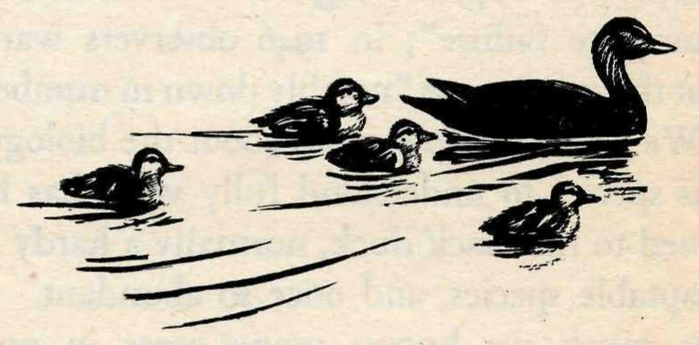
By the time the ice has left the salt marshes—usually in March—many of the ducks are paired off. You can see them on the high tides in every little gut and puddle. As fast as freshwater areas open up, blacks appear on them.
As the season advances, the paired birds go north to the nesting grounds in loosely organized flocks. A few pairs stay in the vicinity.
About mid-April the female begins to search the thickets about the marsh edges for a likely nesting site. She collects grass stems and in a dense patch of meadowsweet or bayberry she fashions a nest, carefully lining it with down. The first broods of ducklings appear at Parker River about May 15. The males do not take part in incubation; during the nesting season they gather in bachelor clubs, congregating in ponds and open water.
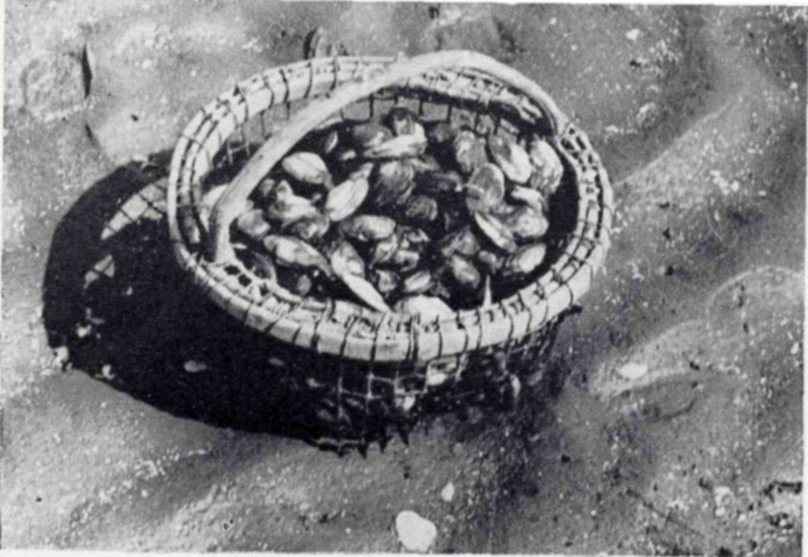
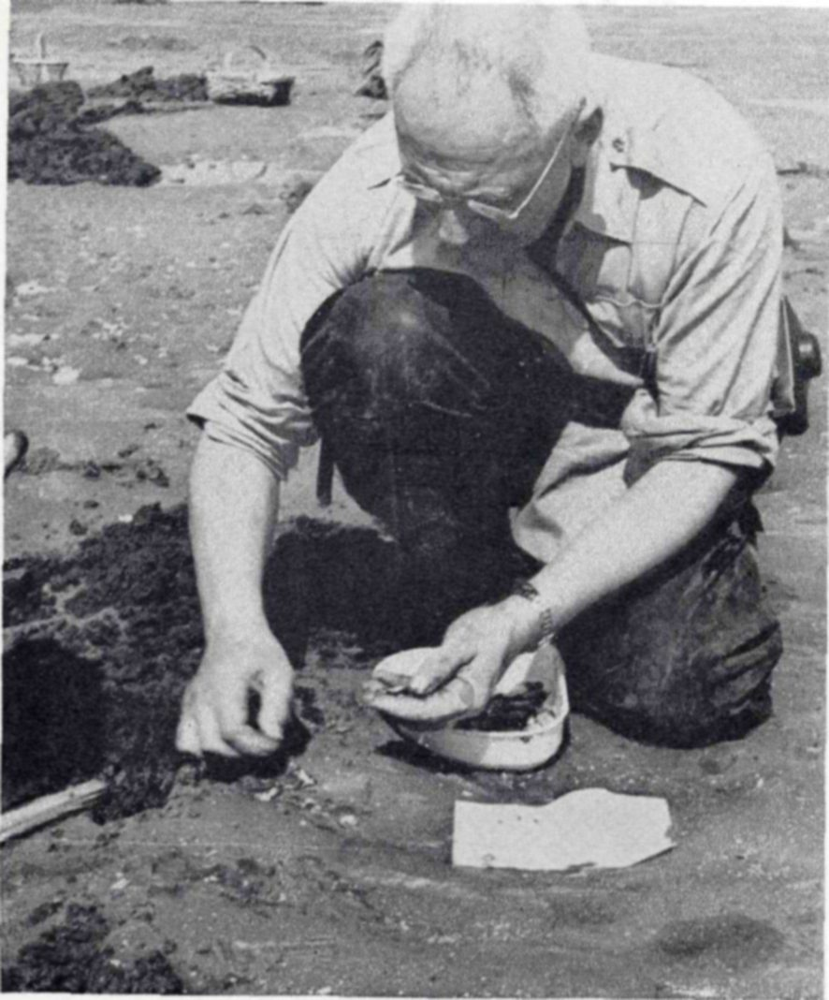
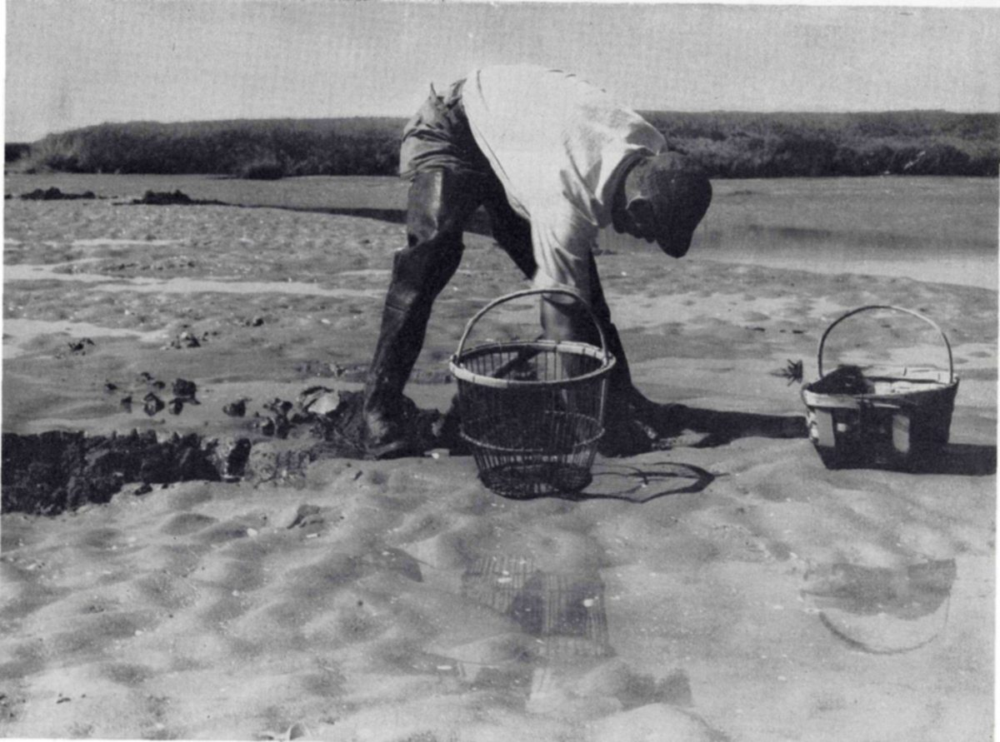
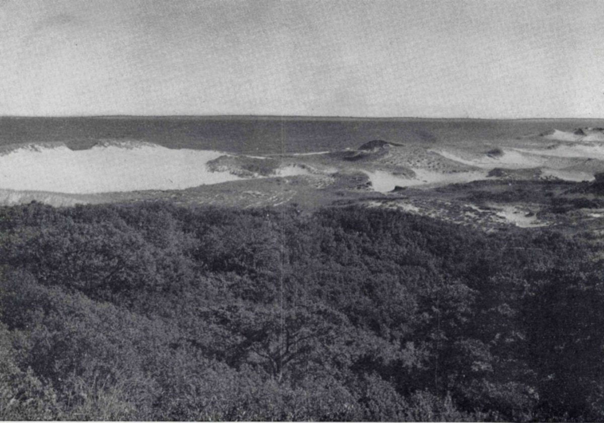
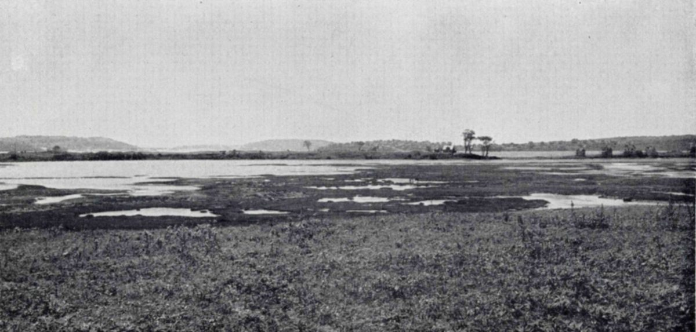
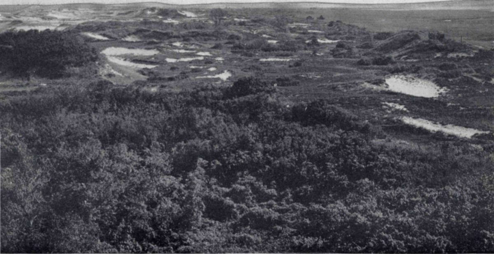
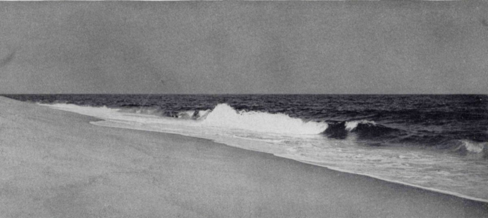
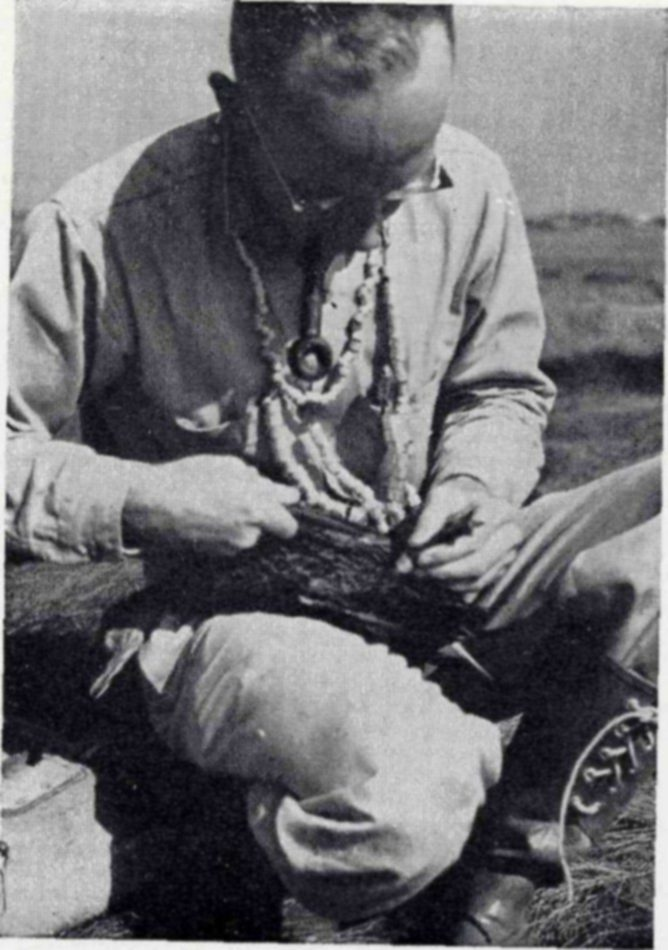
Bird banding stations are operated at many Federal Refuges to study migrations. The birds are caught without injury in cage traps and a numbered metal band or bracelet is attached to the leg. The sex, estimated age, and weight are recorded. Black ducks banded in the Parker River area have been recovered in all the Canadian Maritime Provinces, Newfoundland, and Labrador, and in every coastal State from Maine to Georgia with the exception of South Carolina.
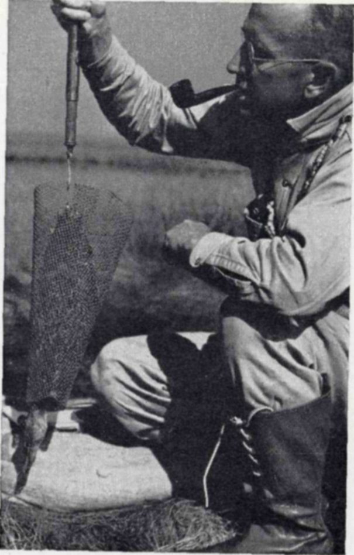
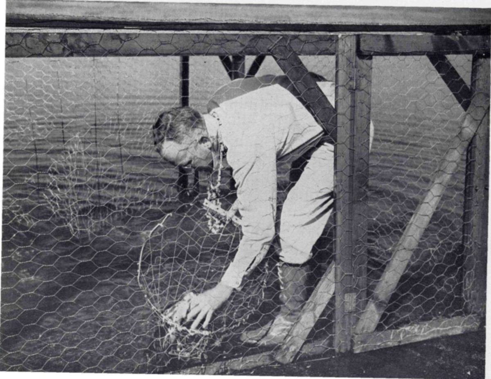
Barring molestation by enemies or other disaster, each nest produces a brood of about 10 ducklings. The youngsters take to the water almost immediately. In company with their mother they feed in shallow water, sheltered by overhanging grasses and water plants. As the season advances, enemies thin the broods of young ducks until, by late summer, the average family is 3 or 4.
By August the young ducks have exchanged their down for feathers, have tested them in flight, and now spend much time a-wing. Another month and they are ready, when the big migrations pass over Parker River, to take their place in the southward flights of the waterfowl.
Canada geese move in their long wavering V’s over the coastal marshes of Essex County, spring and fall. Only a few years ago, flocks of several thousand of these magnificent waterfowl visited Newburyport Harbor during March. Fall flights along the northeastern coast are usually somewhat smaller than the spring flights.
Reports of the refuge managers at Parker River give a good idea of the habits of the Canadas while in this area. In 1943, for example, the manager reported that a few Canada geese were present all through the winter, and that migrants from the south appeared by the time most of the ice was out of the marshes and tidal areas. Many of the geese congregated in the lower Merrimack around Woodbridge Island; others worked down Plum Island. On the flood tides they came high into the marshes to rest or eat the new shoots of the tall marsh grass. As soon as the fresh-water areas lost their ice, the geese tended to separate into smaller flocks and move to small outlying ponds, where they could be seen tipping up and feeding.
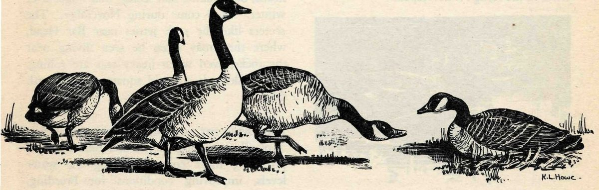
On the refuge, several patches of land have now been sown to rye as a source of food for migrating geese.
The blue-winged teal, among other waterfowl transients, should benefit from fresh-water dykes on the marshes at Parker River. This small and beautiful duck formerly nested in all the middle and northern States east of the Rocky Mountains. But gradually it was driven from the Eastern States as a breeding bird. Even in the prairie regions of northern United States and Canada, encroaching agriculture menaced it and widespread drought destroyed its broods.
Recent reports, extending over the past 10 years, show that some of the teal are returning now to their former breeding grounds in the East. Every year they breed in the general vicinity of the refuge. A number of broods have been raised in recent years on a tributary of the Parker River. At other salt-marsh refuges maintained by the Fish and Wildlife Service, blue-winged teal have increased greatly in numbers as the refuges have provided them with the conditions they need. It seems highly probable that this experience will be repeated at Parker River as the refuge is developed.
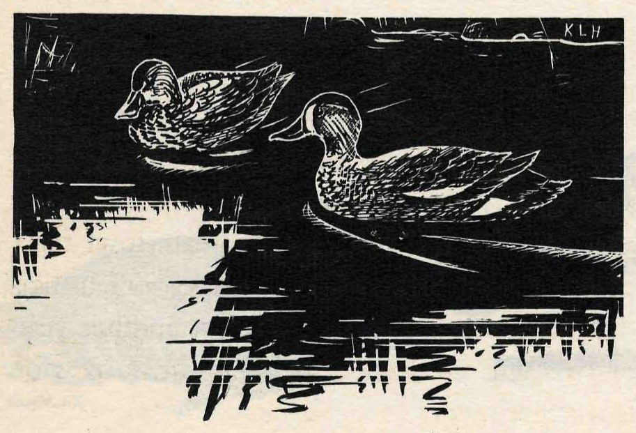
Sea ducks of several kinds—especially the scaups, scoters, goldeneye, bufflehead, old squaw, and mergansers—endure the rigorous winter climate of the northern Massachusetts coast.
The greater scaup is one of the most abundant wintering ducks in the Parker River area. Only the black duck is more numerous there in the bitter midwinter period. From one to two thousand greater scaups were present during the winter of 1945–46. In the spring, migrants swell the winter numbers. In 1945, local ornithologists reported “a continued increase over recent years, with a maximum of 11,500 at Newburyport April 8, the highest count ever recorded.”
Along with the black duck and the scaup, the goldeneye is part of the dominant waterfowl population during the season when cold, storms, and ice have driven all less hardy fowl to the south. The goldeneyes first appear in the refuge waters about the middle of November. In recent years, Christmas censusers have reported one to two thousand goldeneyes off Plum Island in the surf.
Then there are always a few hundred buffleheads, old squaws, and scoters that linger over winter. They come during November. The scoters like the rock jetties near Bar Head, where they may often be seen diving near the rocks, even when heavy seas are rolling. The buffleheads and old squaws mingle with them.
Improving the land for wildlife means, first of all, increasing the natural food supplies, providing more cover, adjusting the water levels, improving conditions for breeding.
Within a wildlife refuge, if it is a successful one, there is a much heavier concentration of birds and animals than in the surrounding country. Seasonally, as the migrations pass, the facilities of a refuge often are taxed to provide for the large number of transients that seek accommodations. In order to provide enough food, water, cover, and nesting areas for its patrons, a wildlife refuge must be a small, separate world in which all these things exist in greater abundance than in the world outside—a wildlife Utopia. To bring about these ideal conditions is the aim of refuge management.
The marshes of Parker River are being developed for two purposes: to increase the production of waterfowl foods, and to provide a greater area suitable for nesting by the black duck.
During the late summer and early fall the food of the black duck on the salt marsh consists largely of the maturing seeds of the various salt-meadow plants—particularly arrowgrass, tidemarsh waterhemp, cordgrass or thatch, various bulrushes, and pondweeds. From August or early September until the winter freeze-up of the marshes, the seeds of these plants are easily available and so furnish food for the ducks during the fall migration.
To increase the production of food plants, a system of shallow flowages will be created in the marshes by impounding the water behind dykes. From small, experimental beginnings, these bodies of fresh or brackish water, about a foot and a half deep, will eventually become an important part of the Parker River refuge. In early summer some of the ponds will be drawn down, and plantings made. In the fall the ponds will be flooded again to make large quantities of seeds and tubers available to the ducks.
Many places in the northeastern part of the country that once were good breeding grounds for the black duck have been spoiled by drainage. To make up for part of these areas, as much nesting territory as possible must be provided within the refuges. To do this at Parker River, wildlife technicians have had to solve special problems, not met at more southern coastal refuges. Parker River lies in a region of very high tides. At Newburyport the average height of the high tides is about 9 feet, while the highest tides of the year are nearly 12. These great tides come in April, May, and June—the time when the black ducks are nesting and bringing out their broods of young—and again in the fall. They completely flood most of the marsh areas and would destroy any nests within their range. This misfortune the ducks can avoid by nesting in the thickets along the central ridge of the island. But more and far better nesting territory is needed than the thickets can provide.
The refuge staff at Parker River is trying an interesting experiment in the management of a northern coastal marsh—building up potential nesting sites in the marshes by creating artificial “islands” which will rise above the level of the highest tides. These are constructed of marsh sod, then planted with waterfowl food plants. It is hoped that the ducks will utilize these mounds as nesting sites, but another year or two will be needed to judge the success of this experiment.
To the waterfowl hunter, a wildlife refuge is an investment. Let us say that 5,000 acres of marsh are “invested” in waterfowl conservation by converting them into a refuge. It is true that this area is withdrawn from hunting, just as money you invest in stocks is no longer in your pocket to spend. In a few years, however, the refuge investment begins to pay the sportsmen dividends.
These dividends may come in several ways. Almost immediately hunting in areas near the refuge improves. The birds are held in the area longer; the hunting season, as a result, is lengthened. Birds moving in and out of the refuge area provide hunting in nearby marshes. This is common experience. It is acknowledged by many Massachusetts gunners at Parker River. Black ducks that formerly were frightened out to sea by the first shots of the hunting season now stay in and about the refuge. Shooting in the marshes immediately north and south of the refuge was better in 1946 than for a number of years.
The most substantial dividends on the refuge investment come after a period of 5 to 10 years has passed. Then it will be found that waterfowl use has increased several hundred percent or more. Such increases at well-established Federal refuges are a matter of record. The Bombay Hook Refuge in Delaware is a good example. Here the number of waterfowl using the area has increased more than 400 percent since the refuge was established in 1937. Official reports show that it was used by 30,000 wildfowl in the fall of 1937, by 60,000 in 1942, and by 137,000 in 1945. When this happens, the sportsman understands the wisdom of the investment he and his fellow citizens have made. Instead of interfering with his sport, the refuge has increased it and made its future more secure.
Preserving the economic uses of the land for the community in which it lies is a principle that is carefully observed by the Fish and Wildlife Service in the development of Federal refuges. The economic values inherent in the land at Parker River are those of a typical northern seacoast region consisting of extensive salt marshes and dune country—the natural products of the salty waters, the salt marshes, and the sandy soil: shellfish, cranberries, beach plums, salt hay.
The Plum Island flats yield an important commercial product, the soft-shelled clam. For more than 200 years, the men of the coastal towns have made a living by digging clams, a poor living in years of clam scarcity, a good living when clams are abundant. According to the New England tradition, these fisheries have been managed by the towns.
In establishing the refuge, the Fish and Wildlife Service has made it clear that there would be no interference with the clam industry. The local towns continue to manage the fishery. Diggers from nearby towns like Newbury, Newburyport, Byfield, and Rowley work the clam beds as in past years with no restrictions by the Service.
In years when clams are abundant, a skilled digger averages about 6 bushels of clams on a tide—some 3 hours’ digging. In years of clam scarcity, he may get only 2. He digs by marking out a section of bottom about 12 inches square with three quick thrusts of the fork, then rapidly turning over the clod and removing the clams.
Over the years, abundance of clams and consequently the prosperity of the clam industry have fluctuated greatly. At present the causes of cycles of abundance and scarcity in the clam populations are not understood. Perhaps in some years their natural enemies, such as periwinkles and sand-collar snails, are more abundant and destructive. Perhaps changes in the saltiness and temperature of the water are important. Until science has discovered why clams are scarce, little can be done to make the yield of this fishery more stable.
With this in mind, the Fish and Wildlife Service has sent several of its shell-fish biologists to Parker River to make surveys on the clam flats, and in 1947 it established a small laboratory at the refuge headquarters for continuing studies. Through these efforts Parker River is becoming, on a small scale, an experimental laboratory which may develop new principles of clam culture. These principles will apply not only to the Essex County clam flats but wherever the soft-shell clam grows on the northern New England coast.
Cranberries and beach plums, although less valuable than clams, are nevertheless an economic asset that has been carefully preserved at Parker River. Free use permits to pick beach plums and rake cranberries on the refuge property are issued by the refuge manager to persons who apply at his office, 65 State Street, Newburyport. About 100 such permits are requested in a season. Each permit allows the bearer “and party” to harvest the fruits, so that the actual number of persons who visit the refuge for such purposes is probably 300 to 400 annually.
Picking of beach plums begins about the middle of August; the first cranberries are ready for raking about the middle of September. The season for harvesting both fruits ends with the first hard frosts.
Salt-marsh hay is another product of the extensive salt meadows of the refuge. Neighboring farmers find it profitable to harvest the hay, which they use as bedding and to some extent as food for their stock. An acre of salt meadow yields nearly a ton of hay per year. The refuge manager issues permits for cutting, giving preference to former owners of the land.
From the standpoint of wildlife conservation, cutting the grass on the meadows has great value. Shore birds flock into these cut-over areas. Among the short stubble all the small food animals of the marshes are more easily found and captured. Cutting the hay on the salt meadows just before or during the fall shore bird migration greatly increases the natural food supply for these birds at a time when they particularly need it. Some of the scarcer east coast shore birds can be seen feeding on these hay meadows in August and September. The black-bellied plover is especially attracted to them.
Although Plum Island once contained a number of summer camps and cottages, most of these properties had lapsed into an uninhabitable state of decay and delapidation before the Government bought the property for a wildlife refuge. Access to all but the northern end of the island is extremely difficult. The road that makes its tortuous way between the dunes and the marshes is often impassable except to jeeps or command cars. Fresh water is at a minimum everywhere, nonexistent in many places. Most property owners on Plum Island were glad to sell to the Government. Those who wished to remain did so under special arrangement. With the exception of several clammers who live regularly on the island, most of the residents come only in the summer for a short period of time.
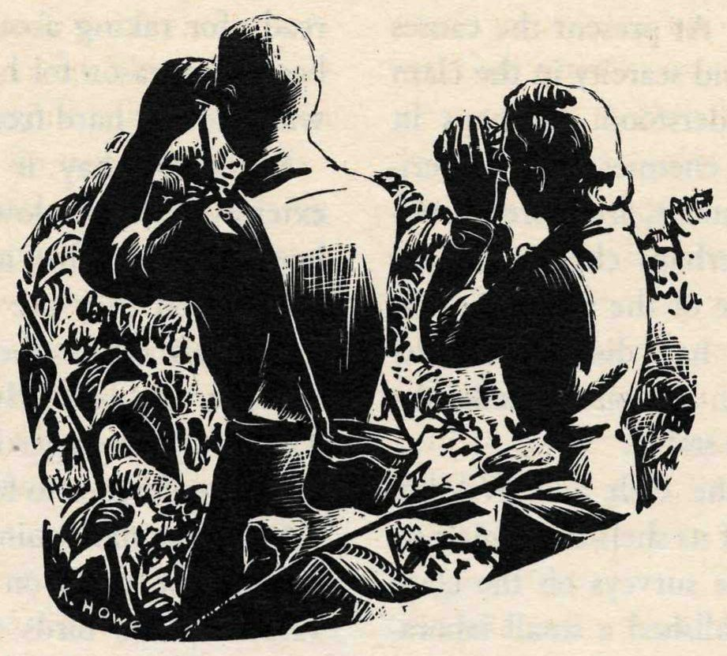
For the bird clubs of eastern Massachusetts, Parker River has an irresistible attraction. This attraction is based on a very practical reason: a greater variety of birds can be seen here than almost anywhere else in the State. Essex County, site of the refuge, has records of 357 different species. To give some meaning to this figure, consider one of the best known birding grounds in eastern United States, Cape May County in New Jersey, where the record is 318. The majority of the birds of Essex County may be observed in the coastal sections which include Parker River.
Scarcely a week passes at the refuge without a visit from some bird club, nature study group, or scout troop. Some of the visitors are serious students of bird life; some are having their first introduction to the rewarding hobby of amateur bird study. Still others, without direct interest in the birds themselves, find in this outdoor recreation a welcome and refreshing release from the tensions of modern life.
Observant photographers find many opportunities on the refuge for close-ups of the native birds. Little parties of sandpipers run along the beach, unsuspicious and unafraid. The richly colored killdeers along the road deserve color photography. Where clam shells, not long out of the shucking houses, have been dumped on the road, herring gulls hover above them in a cloud, so intent on picking the fragments of meat from the shells that they scarcely notice the approach of people.
In the meadows and on the mud flats the shore birds can be approached rather closely. One can always see curlews in the fall, standing like tall brown sentinels in the marsh; yellowlegs are a common sight as they wade the salt pools or chase minnows over a barely flooded flat. In September 1946 a rare species of shore bird appeared on Plum Island—the Hudsonian godwit.
Look carefully out over the marshes and you are sure to be rewarded with some sort of heron, standing motionless in the manner of herons—a good camera shot if you have a telescopic lens. There may be an American egret, a great blue heron, more rarely a bittern. Where the marsh hay is harvested, the stakes driven into the marsh to form the “straddles” for the hay stacks are favorite roosting places of the black-crowned night herons. Seen in early morning sunlight, their white breasts make them conspicuous for long distances.
Plum Island, Joppa Flats, and Plum Island breakwater seem to attract more than their share of rare species, and the hope of surprising an ornithological rarity gives zest to often repeated visits.
When the snowy owls periodically invade New England, birders visit Plum Island with reasonable assurance of finding one or more of these spectacular birds perched atop a salt hay stack. A few years ago, visitors came from places many miles distant to see the rare western grebe. At another time, a flock of 82 Lapland longspurs fed on the Plum Island meadows—probably the largest flock ever seen in the State. The first king eiders recorded for Essex County were seen off Plum Island. The blue goose and the greater snow goose, both considered rare transients, are occasionally seen on the refuge, the latter with increasing frequency. Birding on the Joppa Flats or about the breakwater at the northern tip of the island may yield such rare fowl as the European wigeon.
Botanists find many interesting plants among the dunes, thickets, and marshes. A fine record of the wild flowers, fruits, and berries of seaside New England can be made by any photographer who will visit the refuge at intervals with color film in his camera.
Recreational facilities that may be enjoyed by people who visit the Parker River refuge are—in addition to Plum Island’s exceptional facilities for nature study—those that might be expected on a New England coast little spoiled by civilization. A wide beach, its beauty heightened by the roaring surf, forms the entire eastern border of the refuge. Certain sections of the beach, especially about the rocky ledges known as Bar Head or at Emerson Rocks, are considered good places for surf casting in the fall when the striped bass are running. Persons who wish to enjoy ocean bathing may do so from a public bathing beach at the northern end of Plum Island, outside the boundaries of the refuge. Here also arrangements may be made for ocean sport fishing, including tuna fishing in Ipswich Bay, with the skippers of the numerous small boats anchored in the basin.
The Parker River National Wildlife Refuge is easily reached by automobile. (See map, inside back cover.) The office of the refuge manager is at 65 State Street, Newburyport. Persons who wish to visit only the beach or the upper third of Plum Island need make no special arrangements. To visit other parts of the refuge, however, or to harvest beach plums, bayberries, or cranberries, permission should be obtained from the refuge manager.
A hard-surface road leads to the northern boundary of the refuge. From this point the road is in fair condition as far as the refuge patrolman’s headquarters, but driving is difficult after heavy rains. Portions of this road are flooded at high tide; visits should be planned with this in mind. Passage below the patrolman’s headquarters should not be attempted by ordinary automobile until the road is improved. Driving on the beach is seldom safe or feasible except with special equipment and by persons thoroughly familiar with local conditions.
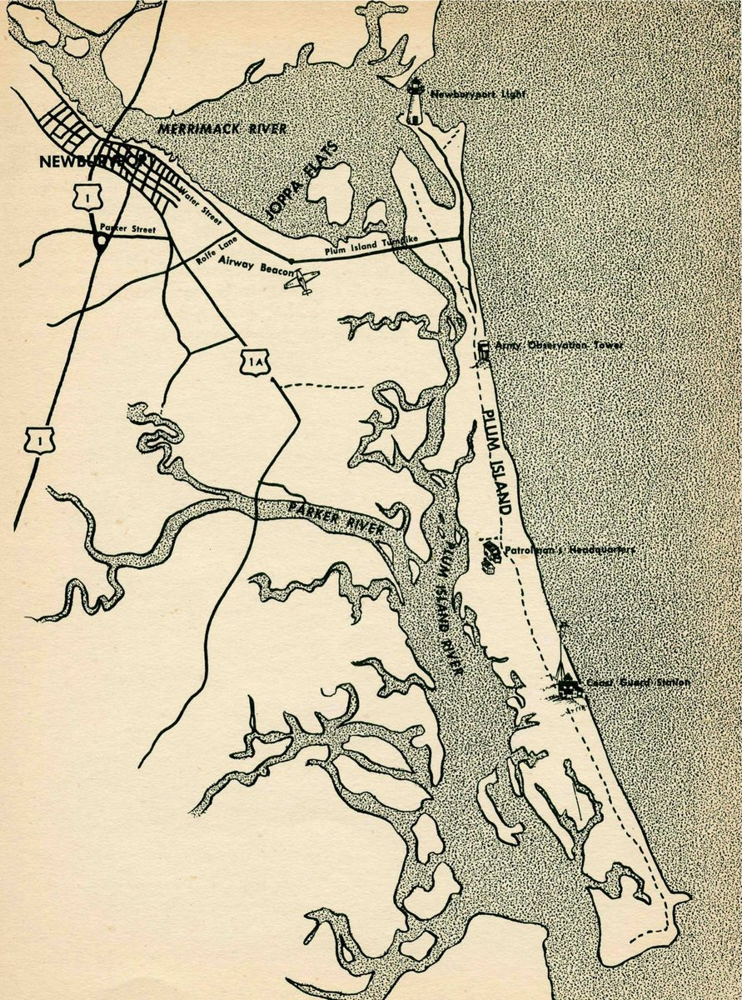
By Rachel L. Carson · Illustrations by Katherine L. Howe · Conservation in Action, Number Four · 1947
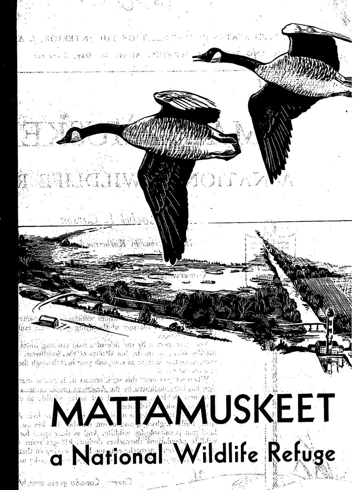
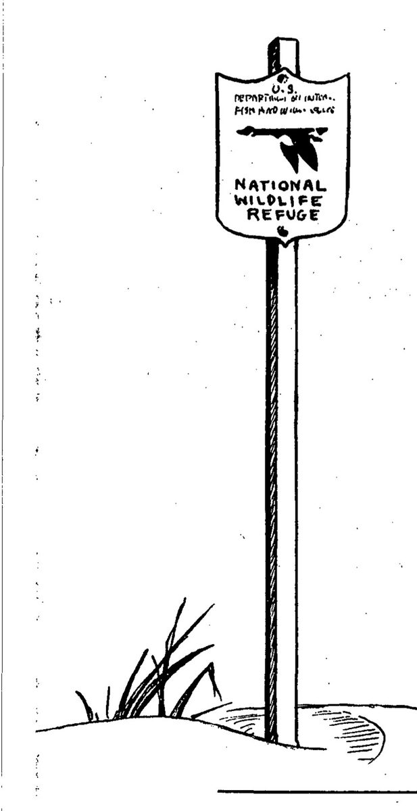
If you travel much in the wilder sections of our country, sooner or later you are likely to meet the sign of the flying goose—the emblem of the National Wildlife Refuges.
You may meet it by the side of a road crossing miles of flat prairie in the Middle West, or in the hot deserts of the Southwest. You may meet it by some mountain lake, or as you push your boat through the winding salty creeks of a coastal marsh.
Wherever you meet this sign, respect it. It means that the land behind the sign has been dedicated by the American people to preserving, for themselves and their children, as much of our native wildlife as can be retained along with our modern civilization.
Wild creatures, like men, must have a place to live. As civilization creates cities, builds highways, and drains marshes, it takes away, little by little, the land that is suitable for wildlife. And as their space for living dwindles, the wildlife populations themselves decline. Refuges resist this trend by saving some areas from encroachment, and by preserving in them, or restoring where necessary, the conditions that wild things need in order to live.
Mattamuskeet, Pea Island, and Swanquarter—two on the mainland and one on the outermost barrier beach—are three National Wildlife Refuges in North Carolina that provide winter food and shelter for more than 100,000 waterfowl. Ducks, geese, and swans that in summer scatter across the northern rim of the world from Greenland to Alaska come down the sky lanes in the fall and in these refuges find the conditions they need to survive the hard months of winter.
At Mattamuskeet you can see one of the largest assemblages of Canada geese on the Atlantic seaboard and more of that giant white bird, the whistling swan, than the average person is likely to see in a lifetime. Pea Island is a winter haven for thousands of snow geese, Canada geese, and such ducks as goldeneyes, pintails, and mallards. At Swanquarter the diving ducks like buffleheads and scaups find the salt waters and the submerged aquatic plants that they need to tide them over winter.
These refuges lie within the Atlantic flyway of the waterfowl. There are four such flyways in the United States, the others being the Mississippi, the Central, and the Pacific.
The Atlantic flyway has extensive breeding grounds, scattered from the eastern border of the continent to the western, but its winter range is only a narrow strip on the Atlantic coast of the United States, an area that is also densely settled and developed for agriculture and industry. Waterfowl refuges are especially needed in this flyway to provide plenty of food and shelter for the birds during the critical winter period.
This booklet tells the story of Mattamuskeet, which is the largest of the three refuges in North Carolina and the most accessible to visitors, and which in some respects is unique among all wildlife refuges. It also includes brief accounts of Swanquarter and Pea Island.
Mattamuskeet—the rhythmic softness of the Indian name recalls the days when tribes of the Algonquin roamed the flat plains of the coast and hunted game in deep forests of cypress and pine. The Indians are gone, leaving few traces upon the land they once knew. Much of the forest as the Indians knew it is gone, too, but even today some of the wildest country of the Atlantic coast is to be found in this easternmost part of the Carolina mainland—the area bounded by Albemarle Sound on the north and Pamlico Sound on the east and south. Here, in this coastal region, are dense woods of pine, cypress, and gum; here are wide, silent spaces where the wind blows over seas of marsh grass and the only living things are the birds and the small, unseen inhabitants of the marshes.
The Mattamuskeet National Wildlife Refuge includes about 50,000 acres of land and water in this Carolina coastal country, in the county of Hyde. The dominant geographic feature of the refuge is Lake Mattamuskeet—a shallow, sluggish body of water more than 15 miles long, 5 or 6 miles across, and some 30,000 acres in extent. Being little more than 3 feet deep anywhere, the lake is stirred deeply by the winds and its waters are usually muddy. Silt-filled waters support little plant life, and so the best feeding grounds for the waterfowl are not in the open lake but in its surrounding marshes. Cypress trees form most of the northern border of the lake, but its eastern and southern shores pass into low swamplands.
Try to learn the origins of this vast inland lake and at once you stumble upon a collection of local legends in which it is hard to separate fact from fiction. Of all the stories of the genesis of Mattamuskeet, local opinion divides its support between two. According to one story, the Indians long ago set fires in the peat bogs, fires that burned so long and deeply that a huge, saucerlike depression was formed. This caught the rains and the drainage water, creating a lake.
The other story has it that a shower of giant meteors once struck the Carolina coastal plain, the impact of the largest ones digging out the beds of Lake Mattamuskeet and the smaller, but otherwise similar, Lakes Alligator, Pungo, and Phelps that lie northwest of Mattamuskeet.
The modern history of Mattamuskeet, although less stirring to the imagination, has been a troubled one. The flat plain between Albemarle and Pamlico Sounds is an agricultural country that yields crops of soy beans, cotton, collards, and grain. On the whole it has too much, rather than too little water. About 1914, people conceived the idea of draining Lake Mattamuskeet and converting its shallow bottom to farm land. Being patterned after similar projects in Holland, this community was named “New Holland.”
The history of this attempt is too long to tell here—the digging of a network of canals, the building of pumping plants and a community of cottages, the spending of millions of dollars, the bankruptcy of one company after another, and the eventual abandonment of the scheme as impractical and impossibly expensive.
In 1934 the land was acquired by the United States Government and a waterfowl sanctuary was established. The Civilian Conservation Corps converted the former pumping plant into a refuge office and store rooms, combined with a modern, comfortably furnished lodge for visitors. A circular staircase was built into the former smoke stack of the pumping plant, turning it into an observation tower. This 120-foot tower affords a magnificent view of the entire refuge and the surrounding country, with thousands of geese and swans often in sight at one time.
According to an agreement with the State of North Carolina, two areas along the south shore of the lake have been set aside for managed hunting, where shooting is under the direct control of the State. Federal as well as State regulations are enforced. About 20 to 25 blinds are established, each in charge of a guide who is required to enforce hunting regulations. Reservations for these blinds should be made in advance by writing to the State Game Protector, North Carolina Wildlife Resources Commission, New Holland, N. C.
Fishing in the lake and canals is a popular recreation, also managed by the State, for which all fishermen are required to obtain a permit. Fishes caught most abundantly are crappie, white perch, carp, and black bass. Fishing is permitted all year except during the hunting season, when it is restricted to Sundays.
Because the refuge is an excellent place to see many wild creatures native to the Atlantic coastal region, bird clubs and general nature study groups, classes in conservation, scouts and conservation-minded hunters are visiting Mattamuskeet more and more often to observe its wildlife.
Deer are plentiful on the refuge. Often you hear them splashing as they make off through the marshes, frightened by your approach. At night, emboldened, they roam about the refuge lawns, where you may surprise them in the beam of your flashlight. Bear occur in small numbers in the region; foxes, raccoons, opossums, mink, and some other small mammals are abundant. A good many muskrat houses are to be seen in the marshes, but this little furbearer saves himself a great deal of labor by often tunneling into the canal banks.
Alligators, which give the nearby Alligator River its name, sometimes swim lazily in the canal near the lodge. Snakes native to the coastal swamps—cottonmouth and water moccasins, copperheads, black snakes, and others—occur but are not often seen in winter. Frogs are very abundant in the swamps and a throbbing amphibian chorus fills the night air even in midwinter when the weather is mild.
For visitors to Mattamuskeet, a modern and comfortable lodge is operated by a concessionaire throughout the year. The lodge has space for 45 to 50 people, accommodations ranging from single or double rooms with private bath to 4-bed rooms. Meals are served in the lodge dining room. Advance reservations and all arrangements for accommodations should be made with the Manager, Mattamuskeet Lodge, New Holland, N. C.
Because of the great demand for space during the hunting season, reservations for this period need to be made far in advance. The most satisfactory time for bird clubs to visit the refuge is during the fall before the hunting season opens, and again in winter and spring after the hunting season. There are comparatively few birds at the refuge during the summer.
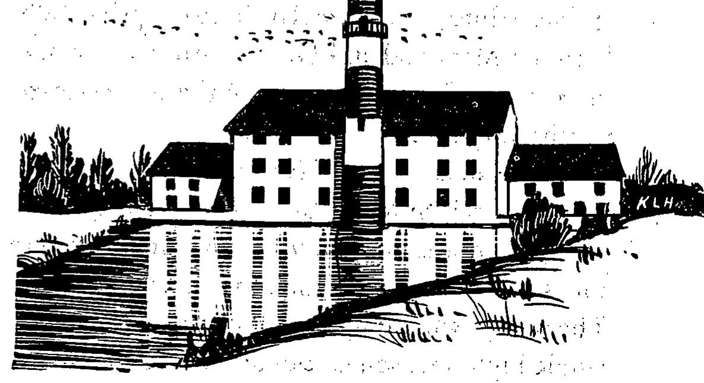
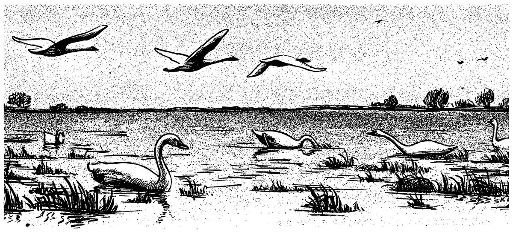
Whistling swans are the most spectacular birds to be seen at Mattamuskeet. With their wing spread of 6 to 7 feet, they are the largest of all North American waterfowl except the related trumpeter swan, which is now reduced to less than 400 birds in the United States.
The whistling swans arrive at Mattamuskeet sometime in November, remain several months, and usually in February begin their northern migration. When they leave Mattamuskeet, they have a trip of 2,500 to 3,500 miles before them, for most of them breed north of the Arctic Circle. The species winters on the Atlantic coast, principally between Maryland and North Carolina, and also on the Pacific coast from southern Alaska to southern California.
A large flock of swans is noisy and their voices are a typical winter sound on the refuge. The mingled chorus of swan voices is something like the sound of geese, although somewhat softer. The name “whistling swan” is given because of a single high note sometimes uttered—a sound that suggests a woodwind instrument in its quality. The trumpeter has a deeper, more resonant voice because of an anatomical peculiarity—the windpipe has an extra loop. Trumpeters are never found on the Atlantic coast, however.
After a long history of persecution by man, all wild swans now enjoy complete protection in the United States, Alaska, and Canada. As though sensing this security, the swans at Mattamuskeet show very little fear of people and allow themselves to be approached much more closely than the geese. Five to ten thousand swans usually winter here, feeding in shallow water areas about the southern and eastern shores of the lake. It is possible to see a flock of 500 swans at one time, magnificent in their gleaming white plumage. Sometimes the swans feed or rest in family groups in which the young birds or cygnets may be identified by their grey color.
For the Canada geese of the Atlantic coast, Mattamuskeet is one of the chief wintering places, with a population of about 40 to 60 thousand of these handsome birds from November to the middle of March.
Magnificent though the swans are, the person who visits Mattamuskeet in midwinter is likely to come away with impressions of geese uppermost in his mind. Throughout much of the day, their wings pattern the sky above you. Underlying all the other sounds of the refuge is their wild music, rising at times to a great, tumultuous crescendo, and dying away again to a throbbing undercurrent.
Guided by the voices of the birds, you walk out along the banks of one of the canals about sunrise. A steady babble of goose voices tells you of a great concentration of the birds on the lake, probably off the end of the canal. At intervals the sound swells as though a sudden excitement had passed through the flock, and at each such increase in the sound a little party of birds takes off from the main flock and moves away to some favored feeding ground. As you stand quietly in the thickets along the canal, they pass so close overhead that you can hear their wings cutting the air, and see their plumage tinged with golden brown by the early morning sun.
The Mattamuskeet country is so famous for its geese that hunters come from great distances, and rent shooting blinds from farmers of the region or in the managed hunting areas operated on the refuge. In the 1946–47 season, the total kill of geese within these managed areas was 868. Large numbers are shot also in the surrounding countryside, but exact figures are not available.
A large majority—probably three-fourths—of the Mattamuskeet geese breed along the eastern shores of Hudson Bay, smaller numbers in the Maritime Provinces.
The ducks that winter at Mattamuskeet are largely the marsh or dabbling ducks—the shallow-water feeders. Pintails are the commonest of these, and it is a beautiful sight to see 10,000 or more of these graceful ducks wheeling above the marshes. Small flocks of wigeons appear in spring along the lake road. Black ducks, green-winged teal, mallards and blue-winged teal spend the winter here in varying numbers, from a few hundred to a few thousand.
Most of the ducks found in winter from Delaware Bay south nest in the prairie provinces of Canada or in the flat country of the Dakotas and Minnesota. All of this country is subject to periodic droughts; then many ponds and marshes dry up, few ducks nest successfully, and few ducklings survive to join the fall flights south.
The bird clubs of North Carolina and surrounding States have made frequent visits to Mattamuskeet ever since the refuge was established. So many birds may be seen in the thickets or along the canals within a few hundred feet of the lodge that it is unnecessary for older members or others unable for strenuous exercise to go far afield. More than one person confined to a wheel chair, who had believed his days of field ornithology behind him, has been brought to Mattamuskeet for a satisfying and refreshing experience.
To gain the best vantage points for observing swans, geese, or ducks, it is worth while to hike out along the remnants of the former canals that here and there extend in long, densely overgrown peninsulas into the lake. Sometimes this will bring into view thousands of geese resting on the water. Concentrations of swans on feeding grounds along the south shore of the lake can sometimes be spotted from the highway, and can then be approached on foot within good binocular or camera range. All cultivated fields of the area should be watched for large flocks of geese.
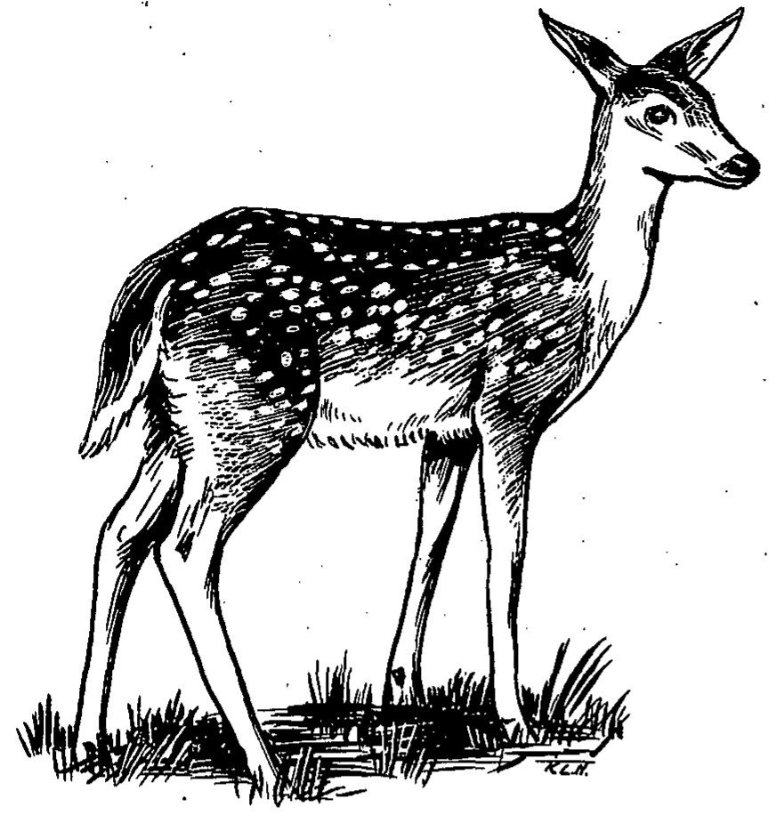
The bird life of Mattamuskeet includes about 200 different species, with water birds and water-loving land birds predominating—less variety than is found in a more diversified country. Bird clubs visiting Mattamuskeet therefore may not compile a long list but see extremely large numbers of certain species, occasionally record a rarity, and have excellent opportunities for close observation of bird behavior.
Waterfowl are, of course, the chief winter attraction. Of these, swans, Canada geese, and the surface-feeding ducks find ideal conditions at Mattamuskeet. Diving ducks tend to go to the Swanquarter area (see page 8). Marsh birds like herons are common: the great blue stays throughout the year, the American bittern is here in winter, the least bittern, green and little blue herons, and American egret are summer residents. Shorebirds, loons, and grebes find little suitable country for their habits and occur only in limited numbers.
The brown-headed nuthatch is a permanent resident, probably nesting on the islands of the lake or about the borders of the canals. In winter the wax myrtles are alive with myrtle warblers. Carolina wrens, chickadees, white-throated, fox, swamp, and song sparrows fill the winter thickets. Other winter residents or transients include the hermit thrush, ruby-crowned kinglet, pipit, horned lark, and cedar waxwing. The mockingbird is common throughout the year.
The most abundant of the summer warblers at Mattamuskeet is the prothonotary, with the prairie warbler also a common bird. Vireos, both white-eyed and red-eyed, are common in summer, as are wood thrushes and orchard orioles.
Observers of birds at Mattamuskeet over the years have marked up a number of unusual species, such as the white pelican, blue goose, white-fronted goose, Hutchins goose, black tern (a fall transient), European wigeon, black rail, and—as interesting stragglers from the west—the avocet and Arkansas kingbird.
What does the Mattamuskeet refuge do for the waterfowl that could not be done in the same area of wild country without management? This is a fair question, and its answer gives one of the chief reasons for establishing wildlife refuges in selected localities over the country.
The answer is this: by cultivating or managing the marshlands by scientifically tested principles, the land within the refuge is made many times as productive of natural foods as outside areas not under management.
Underlying and determining the character of the management activities are the great recurrent rhythms of nature. Moving over the marshlands as over a stage, the passing seasons bring the cyclic sweep of two great series of events, one in the animal world, the other in the world of plants. The two cycles are directly related. In the spring the marshes that have been brown and desolate come alive with fresh green shoots of plants like the sedges, bulrushes, and salt grass. Spring yields to summer, the hot sun is over the land, the plants grow, flower, mature their seeds. By the time autumn begins to paint the leaves of the gums and the swamp maples, the marshes are loaded with food—the roots, seeds, and shoots of the plants that waterfowl eat.
Now the fall migrations of the birds—the sweep of the other, the animal cycle—fill the marshlands with ducks, swans, and geese come down from the north. Here in the marshes they find the food they must have if they are to survive the winter.
By late winter or early spring the food supplies are exhausted. But once more the urge to migrate is stirring among the waterfowl, and soon the marshes are left empty. In the stillness and heat of summer the recuperative powers of nature set to work to build up new food supplies.
To get the largest possible production of waterfowl foods out of the marshes at Mattamuskeet, the manager operates the refuge with certain aims in mind. Among the most important, he must keep down the brush that is forever moving into the marshes. Geese, swans, and ducks feed in marshes but not in thickets, so every foot invaded by the fast-growing brush is a corresponding loss of waterfowl pasture. Today at Mattamuskeet you can see hundreds of acres of productive marsh which have been won back from the thickets by burning, disking, and cutting.
Control of the water level is another method used by the refuge manager to increase the production of food plants. In the spring he lowers the water by manipulating the gates in the canals that lead from the lake to Pamlico Sound, about 8 miles distant. This lays bare extensive areas where 3-edge, 4-square, and other food plants can grow. In the fall the gates are closed, and the marsh areas flooded to serve the food plants in the way the birds prefer—under a few inches of water.
By late January or early February, most of the natural marsh food has been eaten. The thousands of birds that remain must have food to fuel their bodies on the long spring migration. This is a season of busy activity on the refuge. Crews of men move out into the marshes, starting fires in the marsh grass. Keeping the fires carefully under control, many hundreds of acres are burned. Less than a week later, new green shoots are coming up all over the marsh. Within ten days the geese have moved in to harvest this new food supply.
By thus coordinating the management of the refuge with the natural cycles of plant and animal life, the Fish and Wildlife Service has developed Mattamuskeet to the point where it now supports much larger flocks of waterfowl than came to this region in former years.
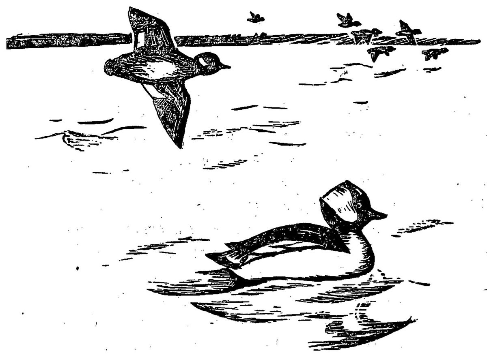
The Swanquarter National Wildlife Refuge, like Swanquarter Bay and the town of Swanquarter, takes its name from the great flocks of swans that the early settlers found each winter in all the waters of the region. Swanquarter Refuge still has its wintering swans, although in much smaller numbers than at nearby Mattamuskeet. At Swanquarter the ducks now greatly outnumber either swans or geese.
This refuge was established chiefly for the diving ducks which include such important game species as redheads, scaups, goldeneyes, and buffleheads.
One of the principal winter foods of the divers was eelgrass. In the 1930’s, a disease swept the eelgrass beds along the entire coast, but at Swanquarter, as well as in other sections, this important plant now is showing encouraging signs of recovery. As the patches of eelgrass spread over its bays again, Swanquarter may be expected to attract even larger numbers of divers than are found there today.
Besides waterfowl, the bird life of Swanquarter includes gulls, terns, bald eagles, ospreys, and characteristic small birds of the woods and marshes. Mink, muskrat, otter, and raccoon are the most abundant furbearers. A good many deer, and an occasional bear, occur in wooded sections.
Swanquarter includes about 43,000 acres of land and water—15,000 acres of woods and marsh bought in 1931 and 1932 under the provisions of the Migratory Bird Conservation Act, and about 28,000 acres of water closed to hunting by Presidential Proclamation in 1933. Water areas of the refuge are public, navigable waters, in which fishing and oystering are conducted subject to State (but not Federal) regulation.
The entrance road to the refuge leaves U. S. Highway 264 about 4 miles northwest of the village of Swanquarter and extends south about 2 miles to the shore of Rose Bay, where the patrolman’s headquarters is located. Permission may be obtained to use the dock and beach area for swimming and picnics.
The Pea Island National Wildlife Refuge lies in a section that only recently was one of the most remote and inaccessible places on the Atlantic coast—the North Carolina banks south of Roanoke Island—bounded on one side by Pamlico Sound, on the other by the open Atlantic. These narrow barrier islands, consisting of beach, dunes, and marsh, are roadless and have been considered beyond the limits of automobile travel. Now jeeps and command cars make travel over the trackless beaches possible, although still hazardous and demanding skill; magazine articles and newspapers proclaim the quaintness of this unspoiled land with its scattered fishing villages, and the mounting influx of sport fishermen and tourists is fast destroying the solitude that was Pea Island’s.
The Pea Island refuge begins at Oregon Inlet and runs south almost to the town of Rodanthe. It includes about 5,880 acres. This narrow island is one of the winter homes of the greater snow goose, accommodating probably half of the entire population of this bird, of which there are not more than 20 to 30 thousand in the world. Many Canada geese and brant come here, as well as practically all species of ducks that winter anywhere on the North Carolina coast. Pea Island is one of the finest places on the coast to observe the seasonal migrations of the shorebirds, of which two species—the willet and Wilson’s plover—nest on the refuge.
Since the refuge was established in 1938, much development work has been done to stabilize the dunes and to create fresh water marshes by building dykes.
The impounded areas, with only the abundant rains as a source of fresh water, have gradually freshened and food plants such as sago pondweed, wigeongrass, bulrushes, and spikerush have become established. Surprisingly, these ponds remain fresh throughout the year. This has made the refuge attractive to a great variety of waterfowl. The average winter population of ducks and geese has increased from about 15,000 when the refuge was established to about 50,000 ten years later. Many additional birds come in during severe winters that freeze over the feeding areas north of Pea Island.
Mattamuskeet may be reached: 1. Via U. S. Route 264 through Washington, Belhaven, and Swanquarter, to New Holland. (Best route under all weather conditions.) 2. From Norfolk across Albemarle Sound at Edenton bridge, then by routes 32, 64, and 94 to Fairfield, across Lake Mattamuskeet on causeway. 3. From Roanoke Island to Manns Harbor by ferry, then by road through Englehard to New Holland. (Forty miles dirt road; feasible only in dry weather.)
Swanquarter—First route recommended for Mattamuskeet is best.
Pea Island—Inquire of refuge manager in Manteo, Roanoke Island, as to local transportation by boat or bus.
By Rachel L. Carson · Designed by Katherine L. Howe · Conservation in Action, Number Five · 1948
International Cooperation in Fishery Conservation . . . . . . . . . . . . . 39
This is the story of the wildlife resources of America, of their place in our history, and their value in our modern life. It is the story of the forces that threaten to destroy them, and the efforts that we must make, as individual nations and as a community of nations, to preserve them.
The Western Hemisphere has a relatively short history of the exploitation of its natural resources by man. This history, though short, contains many chapters of reckless waste and appalling destruction. Entire species of animals have been exterminated, or reduced to so small a remnant that their survival is doubtful. Forests have been despoiled by uncontrolled and excessive cutting of lumber, grasslands have been destroyed by overgrazing. These and other practices have afflicted us with all the evils of soil erosion, floods, destruction of agricultural lands, and loss of wildlife habitats.
All the people of a country have a direct interest in conservation. For some, as for the commercial fishermen and trappers, the interest is financial. For others, successful conservation means preserving a favorite recreation—hunting, fishing, the study and observation of wildlife, or nature photography. For others, contemplation of the color, motion, and beauty of form in living nature yields esthetic enjoyment of as high an order as music or painting. But for all the people, the preservation of wildlife and of wildlife habitat means also the preservation of the basic resources of the earth, which men, as well as animals, must have in order to live. Wildlife, water, forests, grasslands—all are parts of man's essential environment; the conservation and effective use of one is impossible except as the others also are conserved.
We in the United States of America have been slow to learn that our wildlife, like other forms of natural wealth, must be vigorously protected if we are to continue to enjoy its benefits. The present generation has seen the awakening of a vital conservation sentiment. Aroused by the spectacle of critically depleted resources, the public at last demanded action. The year 1903 brought the beginning of a movement to create national sanctuaries for wildlife—a movement that has by now resulted in approximately 300 such refuges, totaling nearly 18 million acres of land. Beginning in 1916, a series of international treaties and national legislation recognized the obligation of the national government to conserve migratory species—especially birds—that move freely over State and International boundaries. Other legislation followed to finance and otherwise assist constructive conservation efforts.
In 1872 a national agency had been created to carry on the research needed to guide conservation of the fisheries, and a few years later an agency with similar responsibilities regarding birds and mammals was established. These agencies today are merged in the Fish and Wildlife Service. In addition to conducting research, the Service enforces conservation laws relating to migratory birds and, in Alaska, administers laws for the conservation of all wildlife, including game and commercial fishes.
Each of the States now has its own conservation agency, since the chief responsibility for conserving resident birds, mammals, and fishes belongs to the States. Through appropriate laws, they regulate the seasons of hunting and fishing, establish bag and creel limits, and control commercial fishing.
While the enforcement of laws to protect and foster wildlife must remain a governmental responsibility, conservation in the United States owes much of its effectiveness to the interest and participation of individuals and private organizations. Some of these groups sponsor research, some acquire and maintain lands for sanctuaries, others actively work to restore and improve wildlife habitats. By their advocacy of constructive measures and their opposition to waste and destruction of our natural resources, these organizations collectively represent a powerful force for conservation.
The pages that follow tell briefly the story of wildlife conservation in North America, with examples chosen largely from the United States. They describe the difficulties and discouragements of attempting to preserve our wildlife in a modern world, in which the advance of civilization is too often a destructive one. These problems are not confined to the United States; they are met, with differences only of detail and degree, wherever a nation is fighting to preserve its natural resources.
Like the resource it seeks to protect, wildlife conservation must be dynamic, changing as conditions change, seeking always to become more effective. We in the United States have much to accomplish before we can feel assured of passing on to future generations a land as richly endowed in natural wealth as the one we live in.
The nations of the Western Hemisphere have one great living resource which they possess in common—the migratory birds. Including long-range migrants like the plovers, sandpipers, hawks, ducks, swallows, and warblers, these birds belong to all the countries of North, Central, and South America, and of the Caribbean region. In their migrations between summer and winter homes they freely cross international boundaries, and some range all the way from the southern part of South America to the shores of the Arctic Ocean.
Like all living creatures, the migratory birds must have food, shelter, and suitable conditions for breeding. No one country has it in its power to provide all these requirements for the migrants, for the birds pass only a part of the year in any one place. For example, Canada and Alaska contain most of the breeding areas of North American waterfowl; the United States of America, Mexico, Central America, and parts of South America contain the wintering grounds, which are equally important for the survival of the birds.
Recognizing this basic conservation fact, the United States and Great Britain concluded a Migratory Bird Treaty in 1916. This treaty obligated both contracting governments to protect ducks, geese, and most other migratory birds. A similar treaty, including also the protection of game mammals, was concluded between the United States and Mexico in 1937. In 1941 many of the countries of the Western Hemisphere joined in the Inter-American Convention on Nature Protection and Wildlife Preservation. While indicating the interest of the signatory countries in conservation, this instrument is very general with no provision for active measures. There is, therefore, a need for additional treaties similar to those between the United States and Great Britain and Mexico, aimed specifically at the protection of migratory birds.
Shore birds perform some of the most remarkable of all migrations. Many of this group, which includes the snipes, sandpipers, plovers, and other less known forms, breed on the Arctic tundras of Canada and Alaska, some on the most northern islands, only a short distance from the North Pole. Some of these species winter as far south as Argentina and Chile, traveling seven to eight thousand miles twice each year.
During the early 1900's the shore birds came close to extinction from heavy shooting. One, indeed, the Eskimo curlew, may have been exterminated. Throughout the spring and fall migrations up and down the coastlines, they were shot by market gunners and hunters. Their habits make them particularly unable to withstand overshooting: they raise a single, small brood in a season, and during migrations they travel in dense flocks over open coasts.
Today the shore birds are protected in North America under the Migratory Bird Treaties; here the shooting of the migrants has been outlawed. Practically all of the species have shown some increase in numbers since the negotiation of the Treaties, but they are still subjected to heavy shooting in parts of the West Indies and South America. Also, the birds face certain other dangers. Those whose normal breeding grounds are in southern Canada and the United States need more undisturbed areas of marsh and prairie. Those that winter on the grassy plains of Argentina, Brazil, and Peru—including the Hudsonian curlew, the golden plover, the upland plover, and others—are menaced by agricultural developments, which have reduced the areas suitable for them.
The migratory song and insectivorous birds include a great variety of species, most of them directly beneficial to man. The natural role of these birds in the control of insects is so important to human society that they deserve the highest degree of protection that can be afforded them. In North America, the group is protected under the Migratory Bird Treaties. Cutting of virgin forests and drainage of swamps have caused local changes in abundance and distribution, but for many species the activities of man have not proved harmful, the birds having adjusted themselves to civilization with marvelous adaptability.
The interesting birds of lakes and marshes, including the grebes, herons, rails, gulls, terns, and others, also migrate freely over international boundaries and in North America are included under the protection of the Migratory Bird Treaties.
Waterfowl.—The large group of migratory game birds which consists chiefly of ducks and geese is especially valued in the United States and Canada as one of our most important game resources. About two million licensed waterfowl hunters depend on these birds for sport each year during the fall hunting season. Probably no other resource has so many persons keenly and directly interested in its welfare, for the entire group of waterfowl hunters, individually and through organizations, are alert throughout the year to reports on the state of the waterfowl populations and prospects for the fall flights.
The conservation of waterfowl is, to an important degree, an international problem. Examination of the map opposite will show why this is true. The most extensive breeding areas of the North American waterfowl are in Canada, Alaska, and northern United States. The wintering grounds, on the other hand, are in southern United States, the West Indies, Mexico, Central America, and the northern countries of South America.
Most of the waterfowl that go south of the borders of the United States during the winter months are those that migrate across the western half of the country. Many of these western ducks spend the winter season in Texas and California, but in some years large numbers seek winter feeding grounds in the coastal waters and river valleys of Mexico, and along both coastlines of Central America. The chief South American wintering areas for this group of waterfowl are in Colombia and Venezuela, although banded ducks have been recovered also in British Guiana, Ecuador, and Peru.
South America also has its own populations of waterfowl which breed in the southern hemisphere and migrate from country to country, but the nature and extent of these migrations have not been fully determined.
Much of our information about the migratory routes of waterfowl and other birds, and about the relative importance of various nesting and wintering areas, has been learned by bird banding. Audubon, the famous painter of North American birds, probably was the first person in the Western Hemisphere to attempt to mark birds in order to trace their migrations. Later, interest in this activity by many persons led to the establishment of the American Bird Banding Association. The project soon became too large to be handled by a private agency, and is now conducted by the Fish and Wildlife Service, having been assumed by a predecessor agency in 1920. The Dominion Wildlife Service of Canada has cooperated actively in this work. There are now about 500 active cooperators in the United States and Canada, each working under permit, who annually place identifying bands on thousands of birds. Each band carries a number and instructions for its return by the finder to the Fish and Wildlife Service in Washington, D. C. Since bird banding was undertaken as a Governmental study, the number of birds banded has totaled more than 5 million, and about 375,000 returns have been received from five continents and many islands of the Pacific.
Banding has established a significant fact in relation to waterfowl conservation: the birds have a hereditary attachment for one particular flyway. The term “flyway” denotes a vast geographic region that is occupied by definite bird populations and contains both breeding and wintering grounds, connected by a more or less complex system of migration routes. There are four major flyways for North American waterfowl: the Atlantic, the Mississippi, the Central, and the Pacific. Banding experiments especially designed to test this theory showed that birds normally belong to one flyway for life, and that there is little shifting from one to another. This fact has been fundamentally important in the management of waterfowl.
The conservation of waterfowl, like the conservation of most other living resources, is a complex problem. Over the years the pressure of civilization, encroaching more and more into what were once vast wilderness areas, has reduced to a dangerously inadequate minimum the kinds of habitats the birds need to carry on their life activities. Drainage and drought have destroyed or rendered temporarily useless large nesting areas; agriculture, marsh drainage, and coastal oil developments have impaired the value of many wintering grounds. Combined with this shrinkage of suitable territory, the birds have been subjected to larger and larger kills as the sport of waterfowl hunting became more popular. As an inevitable result, the waterfowl populations have declined to a small remnant of the magnificent flocks that swept up and down the continents a century ago.

The present generation of Americans has seen three periods of alarming decline among the waterfowl. The first led to the Migratory Bird Treaty of 1916. The second, induced largely by drought and heavy shooting, reached its low point in 1930. Recovering from this crisis in response to increased rainfall, and emergency conservation measures, the ducks and geese increased in numbers until 1944, when another downward cycle began. This seems to have been checked in 1947; with favorable conditions, another increase in abundance should follow.
The conservation program in the United States and Canada has been directed toward improving conditions in nesting areas, controlling hunting to protect an adequate breeding reserve, and providing refuges where the birds may find conditions they require.
Under the authority of the Migratory Bird Treaties and related legislation, the Department of the Interior annually determines for the United States the length of the open season, prescribes bag limits, and places other necessary restrictions on the kill. Especially stringent regulations were adopted in the early 1930’s and again since 1944.
Sportsmen’s organizations in cooperation with governmental agencies have carried out restoration programs over vast areas to restore the water to the land, especially in the breeding grounds of the central prairies of Canada and northern United States.
One of the most important of all conservation measures from the standpoint of lasting effects was the development of a system of waterfowl refuges throughout the country. Out of a total of nearly 300 National Wildlife Refuges, 201, comprising 3½ million acres, were created especially for waterfowl. In addition, numerous sanctuaries are maintained by the States, by private conservation agencies, and by individuals.
These refuges have been established along the waterfowl flyways to meet the special needs of the birds. Many of those in northern United States provide extensive nesting areas. The Bear River Refuge in Utah, Lower Souris in North Dakota, and Malheur in Oregon are refuges of this sort, and also accommodate tremendous numbers of ducks during migration. Some refuges are primarily used as feeding and resting areas on migration routes. Others, like Sabine in Louisiana, Sacramento in California, and Mattamuskeet in North Carolina, are wintering grounds in which vast natural marshlands are preserved and developed for the use of the birds.
When colonists from the Old World first came to North America, immense numbers of wild animals inhabited the continent. To these early settlers, it must have seemed that the deer, bear, elk, moose, and other large game animals could never be reduced seriously in numbers, so great then was their abundance.
For furs, for food, and later for sport these North American mammals were hunted relentlessly. Forests were cut down, prairies were transformed into cultivated lands, plains became grazing lands for domesticated stock. Soon there were not enough of the wilderness areas that the wild animals needed. From this cause, and from unregulated and often wanton slaughter, their numbers declined to a small remnant of the original herds.
Perhaps the best-known of all the native mammals, the American bison, ran a swift course to near extinction. By 1890, there were probably no more than 500 of these animals remaining in the United States, although once there may have been 50 million.
The American elk was hunted persistently because of its good food qualities and valuable hide. By 1910 this animal had been reduced from its original millions to about 60,000.
The prong-horned antelope was regarded as doomed to extinction by the early 1920’s. The black bear vanished from much of its former range; so did the grizzly. The pictuesque bighorn sheep disappeared from most of the mountain and desert areas it once inhabited.
Fortunately, the era of unrestrained exploitation has passed. By the end of the 19th century conservationists, and finally the general public, became alarmed by the threat to the big game animals.
In the National Wildlife Refuge system, some 10,500,000 acres are now set apart primarily for the conservation of the large wild mammals. Another 4,000,000 acres of general wildlife refuges accommodate these animals, which also find sanctuary in the many National Forests and National Parks, and in numerous State refuges.
One of the most interesting of the big game refuges is the National Elk Refuge in the Jackson Hole region of Wyoming. This refuge was established to provide feeding grounds for thousands of elk that move down from surrounding mountains in the fall and winter to avoid deep snows and to feed in the grassy valleys. The Jackson Hole Elk are now one of the largest herds of game that remains in North America.
Herds of bison have been built up in sanctuary areas, especially the National Bison Range in Montana, the Wichita Refuge in Oklahoma, and Yellowstone National Park. From its low point of about 500 animals, the bison population has now increased to more than 5,000.
Hart Mountain National Antelope Refuge in Oregon and the Charles Sheldon Antelope Refuge and Antelope Range in Nevada were created especially for antelope; the Desert Game Refuge in southern Nevada for the desert bighorn. This latter refuge is the largest in continental United States, including more than two million acres.
These and other big game refuges, although few in number, are fundamentally important in preserving our native animals, as well as their natural habitat. Several others need to be established to attain the goal of having, somewhere in the country, a refuge for every native species.
Of its native bird fauna, North America has had the unhappy experience of seeing several species reduced to the point of actual extinction. Such vanished species include the great auk, the passenger pigeon, the heath hen, the Labrador duck, the Carolina paroquet, and probably the Eskimo curlew. For these birds, the conservation movement in the United States came too late. A few others, like the trumpeter swan and the whooping crane, have come perilously close to extermination, but small populations remain.
To protect one of the few remaining colonies of the trumpeter swan, the largest and one of the most beautiful of North American waterfowl, the Red Rock Lakes Refuge was established by the United States Government in 1935. The Red Rock Lakes lie in a high and remote valley in the mountains of southern Montana. Here the swans find plenty of food, good nesting cover, and freedom from disturbance. The winters are severe, but large springs at the head of the chain of lakes keep an area of open water. This is important, because this remnant colony seems to have lost the migratory instinct of its ancestors, and remains in the vicinity throughout the year.
Since the refuge was established, the swan population in the United States has increased from 75 birds in 1935 to 350 in 1947. About half of this number are at Red Rock Lakes, the remainder in nearby Yellowstone Park and on adjacent small lakes. The Fish and Wildlife Service has transferred small numbers of young swans from Red Rock Lakes to Oregon, Nevada, and Wyoming, where new colonies may eventually be established.
The whooping crane is in even more serious danger. According to the latest estimate there are not more than 30 of these picturesque birds left on the North American continent today. Agricultural developments in the central part of the United States and in the Canadian prairies have destroyed most of its breeding grounds. The few survivors nest in some remote Canadian marshlands, and winter on the coast of the Gulf of Mexico. The Fish and Wildlife Service has established the 47,000-acre Aransas Refuge in Texas to help provide suitable wintering areas. About 25 of the birds are found at Aransas each winter.
The conservation of the whooping crane is made especially difficult by its annual migration of 3,000 miles through the interior of the continent, which exposes it to great dangers, although for many years it has been given full legal protection. Discovery of its nesting grounds and protection of the birds while raising their young, together with increased public interest in the enforcement of existing laws, may in time rescue this bird from its present precarious situation.
The wildlife resources belong to all the people; to conserve them successfully the landowners and the local and Federal governments, through their various conservation agencies, must coordinate their efforts in a program with clearly defined goals. In the United States, such cooperation is now achieving excellent results in practical conservation.
In 1937, the Congress of the United States adopted legislation known as the Federal Aid in Wildlife Restoration Act, making possible active conservation programs in all of the States, and in Alaska, Hawaii, Puerto Rico, and the Virgin Islands. Several hundred cooperative projects are now under way, including surveys and investigations, acquisition of land, and development of wildlife habitats.
The need of surveys and research to discover basic facts is now widely recognized. Today every State has its staff of wildlife technicians. Before the Federal-Aid program was begun many of them — perhaps half — had none. Many States, especially those with large populations of game mammals, make annual population surveys, which form the basis of game laws regulating open or closed seasons.
Restocking depleted game ranges is one of the most important cooperative activities in relation to large game. Thousands of elk, deer, and antelope have been moved from localities of comparative abundance and released on depleted or vacant ranges. Small mammals like beaver, muskrats, and raccoons also are transplanted. Some States trap and transplant turkeys, pheasants, quail, and sage grouse. Often two or more States agree to exchange animals of which they have a surplus.
About 728,000 acres had been acquired by the States with cooperative funds by the end of the fiscal year 1947. Some of these lands are devoted to waterfowl nesting or feeding areas, supplementing the system of Federal waterfowl refuges. At least a part of every area acquired for waterfowl is set aside as a sanctuary, with no shooting permitted. Especially in the west where competition for range lands between game and livestock may be a problem, some of the land purchased is being used for big game ranges. In agricultural regions small areas are leased and managed to provide demonstrations of desirable farm-game habitats. In developing land for wildlife, the States work in active cooperation with the landowners and with conservation agencies such as the Soil Conservation Districts.
This entire program derives its principal financial support from the Federal tax on sporting arms and ammunition. Through this tax, which is set aside for wildlife conservation, the 12 million hunters in the United States contribute to the restoration of game birds and mammals.
![State and Federal agencies cooperate in winter inventories of the big game animals of the country, counting animals when they are concentrated on winter ranges. Airplanes are widely used for such inventories, permitting surveys of inaccessible mountain terrain, and making possible relatively accurate counts. Airplane counts are supplemented by men traveling on horseback, or on skis or snowshoes. Present estimates of the big game population of the United States total about 8¼ million animals. — An aerial view from a small airplane, with a propeller blade at left, looks across snow-covered ridges and valleys of rugged mountain country toward a distant skyline of peaks.](images/carson/figcx.jpg)
![[?] their importance in game inventories, airplanes have many other uses in game management. Here [?]nd blocks of salt are being loaded aboard a plane, which will carry them over mountain ranges, drop[?]em on summer feeding grounds of elk and other game animals. The purpose is to lure the game onto [?]mer ranges earlier in the spring and hold them later in the fall, thus saving winter forage, of which in [?]calities there is a critical shortage. — Men in hats stand beside a large high-winged airplane parked on a grass field; one bends over a stack of white blocks on the ground in the foreground.](images/carson/figcz.jpg)

![The beaver is nature's hydraulic engineer, habitually cutting down streamside trees, building dams, and living in the ponds so created. Near headwaters, it may be a useful agent for soil and water conservation. Downstream, in farming and irrigation districts, its activities may cause damage. Some States now regularly trap and transfer beaver to areas where their activities are useful. In the stream shown below, beavers built a series of dams, raised the water table, and turned semi-arid land into a good hay-producing meadow. — A winding stream widens into stepped ponds behind low dams, with brush and trees along the banks and a grassy meadow rising beyond.](images/carson/figdf.jpg)
![About 80 percent of all the wildlife of the country is produced on agricultural lands. Intelligent management of these lands can increase game; practices that lead to deforestation, erosion, and soil impoverishment result in dwindling wildlife stocks. In the southeastern parts of the United States, field border plantings of lespedeza, a leguminous plant, retard soil erosion at field edges, and provide food and cover for quail and other small game (above). On demonstration farms, (below) harmful effects of overgrazing contrast graphically with properly managed fields. — A row of corn stands at the left of a field, with a wide strip of dense, bushy plants growing along its edge and a stand of trees behind.](images/carson/figdg.jpg)
Throughout the world, the most important sources of protein food are the marine fisheries. In the Western Hemisphere, these fisheries have a long history of exploitation. They were the basis of the first organized industry in the New World. Fishing by European vessels was carried on along the shores of eastern North America long before the original colonies were established. During the first difficult years of gaining a foothold on strange shores, the fisheries were a ready source of food for the colonists. They provided the first items of export trade by the New England settlements. During the four centuries since the first Old World vessel crossed to the North American banks, they have provided employment and profit for many thousands of our citizens, and recreation for additional millions.
From their small beginning, the fisheries have spread to all parts of our coastline and have been established in many lakes and rivers of the interior. Collectively, these industries yield a commercial catch of 4 to 5 billion pounds annually, and employ about 125,000 fishermen. Marine species make up more than 90 percent of the total tonnage.
The heaviest producers among United States marine fisheries are the pelagic or surface-living species like the sardines, menhaden, tuna, and sea herrings. As a group, these fishes are widely used for canning, yield high quality meal and oil, are seldom eaten fresh. The large group of bottom-feeding fish found on offshore banks, most abundantly in northern latitudes, are the chief sources of supply of the fresh fish markets. These include chiefly the members of the cod family, some of the rockfishes, and the flatfishes like the flounders and halibut. The most valuable fisheries in the United States are those for salmon, of which the largest quantity comes from Alaska. Other species with high market value include such shellfish as shrimp, oysters, clams, crabs, and lobsters.
The salmon are among the most popular sport fishes of the world. Other marine species cherished as recreational resources are the tunas, swordfishes, marlins, sailfishes, and tarpon.
The early colonists had little understanding of the principles of managing a renewable resource. Under the commercial exploitation of the Nineteenth Century, some of the fisheries suffered periods of reduced yields. By 1872, public concern over the decline of important fisheries led to the establishment of the United States Fish Commission to foster and promote the fishery resources. The work of this former agency is carried on today by the Fish and Wildlife Service. It includes basic biological research, the collection of statistics, improvement of methods of catching and marketing fish, artificial propagation, and the actual management of the fisheries in the Territory of Alaska.

Biologists at sea.—Today, with nearly 200 species of fish and shellfish under exploitation by commercial fishermen, the United States Fish and Wildlife Service maintains a staff of 120 biologists to study basic conservation problems, and operates five marine laboratories. In addition, many of the States conduct fishery research independently or in cooperation with the Federal Government.
Biologists work on trawlers at sea, on fish piers, and in laboratories ashore to find answers to the basic questions that determine how a fishery may be managed to sustain large yields without impairing the brood stock. They tag fish to study their migrations, carry on age and growth studies as an index to population changes, make observations on water temperatures, salinities, currents, and other conditions that control the lives of marine creatures. Such studies are a practical guide to management. They may show that a particular area needs to be fished more or less intensively to keep its population in balance with the food supply. They may show that, for a particular species, fish below a certain size need complete protection through use of nets with larger mesh. Surveys of conditions in the marine environment combined with population studies sometimes make possible annual predictions of abundance as a practical aid to fishing operations.
The United States now operates two modern deep-sea research vessels, the Albatross III, on the North Atlantic Banks, and the Spencer F. Baird in the Pacific Ocean. Equipped with modern electronic instruments and devices, underwater photographic equipment, oceanographic facilities, and experimental fishing gear, they are studying the conditions of the oceanic feeding and spawning grounds as well as the habits of fishes and the most economical methods of utilizing them.
Utilizing the catch.—Conservation of the fisheries is aided not only by biological studies which direct management, but by improving methods of utilizing the catch.
Formerly there was much waste in the handling of fish. Technological research, carried on in governmental laboratories and by private industry, is now developing ways to convert formerly wasted material into valuable by-products. Such research is also helping the industry maintain proper sanitation on boats and in shore plants and markets. For use in remote areas, the Fish and Wildlife Service maintains several trailers equipped to perform laboratory tests in the field. It also carries out educational programs to demonstrate to the industry the most efficient methods of filleting, freezing, packaging, canning, or smoking fish.
The final step in the utilization of most fishery products is their use as food in the home. The Fish and Wildlife Service maintains a staff of cookery experts who demonstrate methods of cooking fish to create tasty and attractive dishes and at the same time retain the rich nutritional values possessed by aquatic foods.
![Photographs at right: (1) Fish cookery demonstration before a group of housewives. (2) Trailer laboratory equipped for field research. Such mobile laboratories handle principally emergency problems requiring quick action, or those that arise in areas remote from major laboratory facilities. (3) Conducting an experiment in fish canning. — In a tiled kitchen classroom, a woman in white stands behind a demonstration counter with a mirror tilted above it, while seated women in hats watch from the foreground.](images/carson/figdu.jpg)
The fisheries of the inland lakes, ponds, and streams are probably the most important single recreational resource possessed by the United States. It is estimated on the basis of license statistics and other information that about 20 million persons engage in sport fishing each year. The annual catch of these fishermen probably amounts to at least 250 million pounds. The inland waters also support commercial fisheries. These, however, are conducted on a much smaller scale than the marine fisheries, and their total yield—about 85 million pounds—is a small fraction of the oceanic harvest. In addition to the catch of organized commercial fisheries, an unknown but fairly large poundage of fresh-water fish is caught by individuals fishing for their own use as food.
On the whole, the fresh-water fisheries are more easily harmed by human activities than the great ocean fisheries, which, by their very remoteness, are largely immune to injury except from overfishing. The inland waters, on the other hand, can be poisoned by industrial pollution, depleted by diversion of water for irrigation, or choked with erosion silt. Compared with this destruction of their essential habitat, the damage to fresh-water fishes by excessive fishing is, except for particular localities, relatively slight.
In early attempts to manage fresh water fisheries, chief reliance was placed on artificial propagation in hatcheries. This activity is still extremely important, particularly in relation to trout. In fishing waters near large centers of population, or in public recreational areas like the National Parks, sport fishing could not be maintained throughout a season without regular plantings of hatchery fish. Now, it is realized, however, that hatching and stocking fish must be accompanied by the protection and restoration of habitat.
The conservation of the inland fisheries and the conservation of soil and water are inseparable parts of the same problem. Bad farming practices and excessive lumbering, which denude the land and hasten erosion and loss of soil, create stream conditions which cannot be tolerated by fish. Rapid run-off of rain waters may scour stream beds, destroy fish food, bury spawning beds under silt. Muddy, turbid waters support few fish. Water that contains the chemicals of industrial pollution, the oxygen-consuming wastes of food-processing plants, or untreated sewage is generally destructive to fish. Reforestation, soil-conserving methods of farming, and control of pollution are some of the most important ways of improving fishing in inland waters.
Harnessing the waters of a river to provide hydroelectric power, to irrigate agricultural lands, or to control floods often creates conditions hazardous to fish. These hazards are especially acute where runs of migratory fish are concerned. In the course of their life cycle, these fish typically spawn in fresh water streams or lakes, the young (and sometimes the adults) migrate to the ocean, and later return to spawn. Dams obstruct spawning runs and may destroy the young fish on their seaward migration. Irrigation diversions often are death traps for young migrants. The United States has such problems in relation to its salmon and steelhead trout fisheries, and, to a lesser extent, its shad and river herrings. Resident lake and stream fishes also may be affected, especially where the character of the water is changed, as from a cool, running stream to a warm reservoir pool.
Where dams obstruct the migration of salmon, herring, and other fish that come in from the sea to fresh-water spawning grounds, fishways should be provided. These, as designed by hydraulic engineers, usually take the form of a broad ladder or “stairway” in which the steps are pools of water, so that the fish in their ascent may swim or jump easily from one level to the next. Such ladders may sometimes serve the young fish as well on their downstream journey; usually, however, special bypasses or other devices must be provided in an effort to protect them from the dangers of passing through powerhouse turbines.
On irrigation projects, not only must the dams be provided with fishways, but the irrigation diversions must be screened to prevent the entrance of fish which would eventually find themselves stranded on agricultural lands. Many resident river fish are so destroyed; on the Pacific coast of the United States the problem is especially serious as it affects seaward-migrating young salmon.
Conflicts between such water-utilization projects and the fisheries often can be resolved by advance planning; once actual construction has begun it may be too late to provide for fishery requirements. In the interest of fishery conservation, the United States recently has established closer coordination between Governmental agencies concerned in river development and those familiar with the requirements of the fisheries.
![In the United States, the Federal Government operates about 100 hatcheries, the various States about 500. Federal hatcheries in 1947 produced 58,450,000 trout and other cold water species, 34,000,000 warm water species like basses and sunfishes, 81,250,000 salmon and steel head trout, in addition to the hatching of marine species. Below: Fish and Wildlife Service hatchery at Uvalde, Texas. Left: Young trout in a hatchery trough. — Seen from above, two long, narrow concrete tanks side by side are crowded with hundreds of small young fish, packed more densely at the bottom of the left tank.](images/carson/figeb.jpg)
![Farm fish ponds provide food and recreation and are important in soil and water conservation. Hundreds of thousands of such ponds have been built in the United States during recent years; however, many more are needed for effective soil conservation. Properly managed, a farm pond may yield several hundred pounds of fish per acre—much more than the average food production of farm land. Good management includes fertilization, stocking with the proper species in proper proportion, and harvesting the crop regularly. Federal hatcheries annually supply about 12 million fish for farm pond stocking; many States also raise fish for these ponds. — A small pond lies in a hillside pasture beside a barn, seen past a barbed-wire fence and the bare branches of a large tree, with flowering trees and hills beyond.](images/carson/figed.jpg)
Fur seals.—One of the most impressive stories in the history of conservation is that of the North American fur seals. These seals, concentrated during their breeding season on the Pribilof Islands in Bering Sea, were once on the verge of extinction; by careful management based on international agreement, they have been fully restored. This herd now contains about 80 percent of all the fur seals in the world, smaller herds being found off Uruguay, the Cape of Good Hope, and in the Western Pacific off Siberia.
When the Pribilof Islands were discovered in 1786 by the Russian navigator, Gerassim Pribilof, there were probably 4 million seals on the Islands. About a hundred years later, in 1867, the United States acquired possession of the seals through the purchase of Alaska and the adjacent islands from Russia. During the interval, intensive sealing had reduced the herd to about 3 million.
Ruthless exploitation of the fur seals continued. Besides the excessive kill, the most harmful practice was pelagic sealing, or the killing of seals at sea. This was done by the fishermen of several countries—Canada, the United States, and Japan. It was particularly destructive because it often resulted in the killing of the mother seals, whose pups then died of starvation.
By 1910, the herd had been reduced to only about 130,000 animals, from its former strength of 3 to 4 million. With virtual extinction of this immensely valuable resource threatened, a program of international cooperation was undertaken. Under a treaty effective in 1911, the countries interested in the resource agreed that there should be no more pelagic sealing. The United States, which owned the breeding grounds of the herd, took over its management and all sealing operations. A share of the profits was annually paid Canada and Japan. Since that time, the taking of seals for their pelts has been carefully adjusted to the size of the herd and has been confined to the immature males in excess of those needed as a breeding reserve.
The success of this system of management may be judged by its results. The herd has now increased to 3,600,000 animals (1947 census), and yields 60,000 to 70,000 skins a year.
In 1941, the treaty of 1911 was abrogated by Japan. A provisional agreement between the United States and Canada, continuing the principal provisions of the treaty, now affords protection to the seals.
Opposite: After a southward migration in winter that takes the seals as far as the coast of southern California, the herd returns to the Pribilof Islands. On the breeding grounds they are associated in family groups known as harems, consisting of one bull and about 40 cows. The pups are born soon after the arrival of the female seals in March or early April.
![A. Factory ships for taking baleen whales not allowed. B. Proposed sanctuary for baleen and humpback whales. C. Factory ships for taking baleen whales allowed. D. Factory ships for taking baleen whales allowed, but ships operating here cannot be used in any other waters within one year from termination of that season. Humpback whales cannot be taken. — A world map with the land in black. Letter A covers most of the open oceans, C a hatched area of the North Pacific, B a blank box south of the eastern Pacific, and D hatched Antarctic waters on either side.](images/carson/figeg.jpg)
About 75 percent of the world’s whaling is now carried on pelagically from factory ships in the Antarctic. Coastal whaling grounds exist off Chile and Peru, and off Japan, South Africa, the Azores, New Zealand, and in the North Atlantic and North Pacific. The leading whaling nations of the world, all of which operate in the Antarctic, are Norway, Great Britain, the U. S. S. R., the Netherlands, and South Africa. The present world demand for whale oil and other products of the industry is enormous.
Whales are a marine resource that occur in varying abundance in all oceans of the world and have been the object of pursuit by 20 to 30 nations.
As a world industry, whaling is perhaps a thousand years old. Throughout the history of the fishery, on one whaling ground after another, the same pattern of events has been repeated: The rise, climax, and decline of a great industry. As each area in turn became exhausted through overfishing, the whalers moved on to new fields. Shortly after 1900, the industry began operation in the last great unexploited area, the Antarctic Ocean.
Fearing that the same pattern of overfishing and depletion would be repeated in the Antarctic, and that the remaining profitable grounds in other parts of the world would become exhausted, the world’s leading whaling nations took action in the early 1930’s. The League of Nations called together a committee to consider international regulation of the whaling industry. From this action, several international conventions have set forth regulations for whaling, the first in 1932, another in 1937, upon which, with subsequent protocols and agreements, the present whaling regulations are chiefly based.
These regulations prescribe seasons for whaling, establish the minimum legal size for whales of each species, and prohibit the killing of females accompanied by calves, and of any whales of certain species. The regulations also require the fullest possible use of each whale taken. The participating nations, which include most of the important whaling countries, share responsibility for enforcement.
Halibut.—The history of the world’s natural resources has many examples of their misuse and destruction. In a few cases the course of depletion has been halted and even reversed before it was too late. The story of the Pacific halibut is an example of such a conservation effort.
The halibut is a giant flounder of northern oceans, found on both coasts of North America and in the Arctic Ocean. Being a slow-growing fish, maturing at the age of 12, it is especially subject to depletion.
The exploitation of this resource ran a swift and destructive course. From a small, local enterprise on the Pacific coast of the United States, the fishery extended its operations along 2,000 miles of coastline, from California to Bering Sea. Aided by gasoline and Diesel power and by mechanical fishing devices, it grew more and more intensive. Stocks of fish began to decline. Fishermen found they had to work longer and harder to fill their holds, and despite their efforts the total catch fell.
The halibut fishery was exploited by two nations, the United States and Canada. Moved by evidence of alarming depletion, these two countries in 1924 joined in a conservation program. Under an international treaty a commission was established to study the biology of the halibut and formulate sound principles of conservation. Later the international convention was renegotiated to provide powers of regulation.
Years of biological study have revealed the facts concerning migrations, spawning, growth, and survival upon which a successful management program is now being carried out.
Under international regulation, the abundance of halibut has increased markedly on all grounds. The resource is now yielding an annual catch 10 million pounds larger than under unrestricted fishing immediately before regulation.
Fraser River Salmon.—The sockeye salmon fishery of the Fraser River is another example of a resource shared and managed by two nations. Although the salmon of this river system spawn in British Columbia, the young fish migrate to the sea and the mature salmon return to spawn through American as well as Canadian waters.
Once these salmon were enormously abundant. For many years the exploitation of this valuable fishery by the two countries was an unhappy story of overfishing, destructive methods, declining runs. In 1913, rock slides on the Fraser River 130 miles from the sea, in a narrow passage known as Hell’s Gate, prevented millions of fish from reaching their spawning grounds. This disaster not only virtually destroyed a complete cycle of fish, but created an obstruction for future runs. From these various causes, the runs declined to about a tenth of their former magnitude.
In 1937 the Governments of Canada and the United States of America concluded an international convention for the conservation of the Fraser River salmon. An International Commission was appointed, with authority to make biological studies and, after eight years of study, to regulate the taking of salmon.
With two million dollars provided by the Governments of the United States and Canada, the Commission has built fishways at Hell’s Gate and several other points where passage was difficult. It also plans to improve and restore many former spawning areas. These measures, in addition to regulation of the catch, give promise of restoring this fishery to something approaching its former importance.
The study and solution of conservation problems of common interest to the people of all the American Republics has been aided during the past ten years by the United States Government through its Interdepartmental Committee on Scientific and Cultural Cooperation. This Committee implements resolutions concerning technical cooperation adopted by conferences of American Republics. Its program provides a practical plan, through exchanges of information and technical skills, for conserving and developing the fishery and wildlife resources of the American Republics. Some of these resources belong only to one or two nations; others, especially the migratory fishes and birds, move freely across international boundaries, and their conservation is important to all nations which share them.
The first of these cooperative projects was carried out with the Government of Peru, which had become interested in investigating the extent of its fishery resources and, if possible, increasing them. In 1941, at the request of Peru, the United States sent a mission of three fishery experts, equipped with a fishing vessel and special gear and apparatus, to explore the Peruvian fisheries. Expenses were paid by the Peruvian Government. At the time of the investigation, the problem of increasing supplies of protein foods was made especially urgent because of disturbed world conditions. The mission assembled much basic information and made specific recommendations for the development of the industry and more efficient utilization of its products.
Similar requests from other nations followed. A survey of the entire Caribbean area was made in 1942. As was true of most sections of Latin America, little was known about the extent and potential productiveness of the fisheries of the Caribbean. Critical wartime conditions made increased local production of foodstuffs a necessity. The mission covered some 30,000 miles of coastline and was completed in about seven months. It visited every capital city, and made field surveys of fishing areas in almost every country.
Mexico and the United States have benefited from close cooperation in fishery studies during recent years. These two countries have—especially in the tuna and shrimp fisheries—important contiguous fishery resources. Many mutually important problems arise in connection with such fisheries—problems that require facts as a basis for their solution. Under the Mexican fishery mission, a marine fishery laboratory has been established at Guaymas, marking the beginning in Mexico of modern fishery research. Marine fishery surveys have been undertaken in about a dozen Mexican states.
The depleted fisheries of inland Mexico also need restoration. Encouragement of farm ponds, like those so popular in southern and southwestern United States, has helped to relieve food shortages in these inland areas. Bass and sunfish have been planted in such ponds, and in new reservoirs, connected with hydroelectric and irrigation projects. By improving production and stocking procedures, it has been possible to extend the planting of trout in the colder waters of Mexico.
Other fishery missions were carried out in Venezuela in 1943 and 1947, in Chile in 1944 and 1945, and in Panama in 1948. In each instance the Government requesting the technical assistance bore the expenses of the mission and cooperated actively in the project. In 1945, the United States, at the request of the Government of Nicaragua, detailed a biologist to survey potential trout streams in that country. Nicaragua was interested in developing better fishing, not only for its own citizens, but as a tourist attraction.
Extending beyond fisheries to include bird and mammal resources within its scope, a mission to Guatemala in 1946 and 1947 made an inventory of the natural biological resources of that country and drew up a suggested conservation program. This program included migratory birds, and, if adopted, would make its effects felt in other American Republics north and south of Guatemala.
On the invitation of the Cuban Government, the Fish and Wildlife Service assigned a party of three ornithologists in 1948 to a survey of the migratory bird fauna of Cuba. Many birds which spend the summer on the continent of North America winter in Cuba, or pass through that country during the spring and autumn migrations. For this reason their conservation is important to all the countries within their range.
The decline of valuable pearl oyster fisheries in Panama led that country to ask for the services of a specialist to discover causes for the depletion of the oyster reefs. Early in 1948, the Fish and Wildlife Service sent an expert in shellfish biology to Panama to make a detailed survey of conditions on the reefs and recommend conservation measures.
These cooperative programs reflect the ever-increasing need and desire for international cooperation in conserving and developing the natural resources of the Western Hemisphere.
Many International, Federal, State, and private conservation agencies and other organizations have cooperated with the Fish and Wildlife Service by furnishing photographs for this publication. It is a pleasure to acknowledge the assistance of the International Pacific Salmon Fisheries Commission, Allan D. Cruickshank of the National Audubon Society, Montana Fish and Game Commission, Bureau of Reclamation, Bonneville Power Administration, National Park Service, Forest Service, Soil Conservation Service, Navy Department, Fouke Fur Company, the Institutional Magazine, and George E. Mushbach.
This publication is issued in furtherance of the program of the United States Government for cooperation with American Republics, and the material assistance of the Interdepartmental Committee on Scientific and Cultural Cooperation is gratefully acknowledged.
By Vanez T. Wilson and Rachel L. Carson · Illustrations by Bob Hines · Conservation in Action, Number Eight · 1950
If you travel much in the wilder sections of our country, sooner or later you are likely to meet the sign of the flying goose—the emblem of the National Wildlife Refuges.
You may meet it by the side of a road crossing miles of flat prairie in the Middle West, or in the hot deserts of the Southwest. You may meet it by some mountain lake, or as you push your boat through the winding salty creeks of a coastal marsh.
Wherever you meet this sign, respect it. It means that the land behind the sign has been dedicated by the American people to preserving, for themselves and their children, as much of our native wildlife as can be retained along with our modern civilization.
Wild creatures, like men, must have a place to live. As civilization creates cities, builds highways, and drains marshes, it takes away, little by little, the land that is suitable for wildlife. And as their space for living dwindles, the wildlife populations themselves decline. Refuges resist this trend by saving some areas from encroachment, and by preserving in them, or restoring where necessary, the conditions that wild things need in order to live.
In the autumn of 1824 a buffalo-hide canoe drifted down the Bear River to its mouth in the Great Salt Lake of Utah. Within sight of that vast inland sea, Jim Bridger must have paused in amazement. Everywhere he looked—in the sky, on the open water, over the marshy borders of the lake—there were birds. It is said that the famous explorer of the western wilderness brought back reports that he had that day seen “millions of ducks and geese.”
The Bear River marshes were soon to know years when their waterfowl were numbered, not by millions, but by thousands; when the white settlers had diverted water for irrigation and drained the wet lands where the waterfowl found food and protection; when gunners had slaughtered them by the thousands; and many others had fallen prey to diseases resulting from this disastrous series of events.
But now a miracle of conservation has been accomplished, and once again, as in the days of Jim Bridger, the skies over Bear River are patterned with millions of wings. The Bear River Migratory Bird Refuge which helped accomplish this miracle is one of the show places of the continent. About 20,000 people visit it annually. Here, especially during the fall migration, it is literally possible to see a million ducks in one day. Here many species considered rare elsewhere may be seen by anyone who will drive his car slowly around the miles of gravel road that crown the retaining dikes of the marshes. Here are birds that, in their north and south flights, have touched almost all parts of the western half of the continent. The site of this great spectacle is a key spot in the conservation of North American birds.
The Bear River marshes were not always as they are today. The setting of the refuge has been molded, first by the slow processes of nature, then more rapidly through changes resulting from human settlement of the region. Some of the latter changes have been for the better, some for the worse.
High up on the flanks of the mountains around the flat marshlands of the refuge there are plainly marked terraces that stand out as light streaks against the blue background of the mountains. These were the shorelines of ancient Lake Bonneville, a large inland sea that covered some 20,000 square miles of this part of the world during the Pleistocene Epoch, some scores of thousands of years ago. Rain and snow fell heavily during those times, and streams ran full with the water of melting ice during the interglacial periods. Lake Bonneville was 1,000 feet deep in places. Through Red Rock Pass in its northern rim its waters drained by way of old channels of the Snake and Columbia Rivers into the Pacific Ocean.
Over the centuries the climate underwent a change from wet to dry, and with increasing aridity the level of the lake fell below its outlet and drainage ceased. The area covered by water shrank; the lake became increasingly salty. Great Salt Lake is the present-day remnant of old Lake Bonneville; it is a tenth the size of its ancestral lake, its average depth is not more than 20 feet, and it contains one part of salt to five parts of water. The flat land enclosed within the rim of mountains is the former floor of Lake Bonneville. This is the site of the Bear River Refuge.
The waterfowl that flew over this part of the Pleistocene world must have found little to attract them to the deep, steep-walled Lake Bonneville. But as Great Salt Lake matured and the receding waters reached the present valley floor, marshes developed at the mouths of rivers and streams, and unexcelled habitats were created for water birds. Early records of the bird life of these marshes are vague as to the species, but they give a clear impression of the vast hordes of waterfowl that must have supplied food for generations of Indians.
Following Jim Bridger and the few adventurous trappers that searched the Bear River and other mountain streams for beaver and other fur animals, came Capt. John C. Fremont and his exploration party. On September 3, 1843, Captain Fremont visited the delta of the Bear River. In his official report he gave the following description:
“The waterfowl made this morning a noise like thunder. A pelican (Pelecanus onocrotatus) was killed as he passed by, and many geese and ducks flew over the camp. Descending the river for about three miles in the afternoon, we found a bar to any further travelling in that direction—the stream being spread out in several branches, and covering the low grounds with water, where the miry nature of the bottom did not permit any further advance. We were evidently on the border of the lake, although the rushes and canes which covered the marshes prevented any view; and we accordingly encamped at the little delta which forms the mouth of Bear River; a long arm of the lake stretching up to the north between us and the opposite mountains. The river was bordered with a fringe of willows and canes, among which were interspersed a few plants; and scattered about on the marsh was a species of Uniola, closely allied to U. spicata of our sea coast. The whole morass was animated with multitudes of waterfowl, which appeared to be very wild—rising for the space of a mile round about at the sound of a gun, with a noise like distant thunder. Several of the people waded out into the marshes, and we had tonight a delicious supper of ducks, geese, and plover.”
A few years later Capt. Howard Stansbury, making a reconnaissance of a new route through the Rocky Mountains, arrived at Bear River Bay on October 22, 1849. It was covered, he wrote, “by immense flocks of wild geese and ducks among which many swans were seen, being distinguishable by their size and the whiteness of their plumage. I had seen large flocks of these birds before, in various parts of our country, and especially upon the Potomac, but never did I behold anything like the immense numbers here congregated together. Thousands of acres, as far as the eye could reach, seemed literally covered with them, presenting a scene of busy, animated cheerfulness, in most graceful contrast with the dreary, silent solitude by which we were immediately surrounded.”
After the fur trappers and the explorers and the gold seekers came permanent colonists. When the Mormon pioneers arrived in the valley of the Great Salt Lake in 1847 and established their settlement, the country was inhabited only by Indians and was part of the region belonging to Mexico. At the close of the Mexican War in 1848 it became part of the United States. The Territory of Utah was established in 1850. In 1869 the rails of the first transcontinental railroad were joined within sight of the present refuge, and the rapid advance of civilization into the wilderness began.
Water, and conflict for water use, dominate the history of the area. The first need of the permanent settlers was the production of life-sustaining crops. On the valley floor the poorly drained soils contained a high concentration of soluble salts, and cultivation was necessarily restricted to better drained lands near the base of the mountains. Here irrigation was necessary. Although good agricultural land was at a premium, water was even more scarce in these arid lands of the Great Basin.
Little by little, every possible source was utilized to its fullest extent. The Bear River, in its 600-mile course from the Uinta Mountains through parts of Utah, Wyoming, and Idaho to Great Salt Lake, is said to be the most completely utilized river in the world. The Bear River Valley canal and irrigation system, one of the largest diversions of water from the Bear River, was completed in 1891 and the first water was diverted from the river the following spring. This and later diversions greatly reduced the summer flow, and after a few years little remained of the once extensive marsh areas.
Irrigation took its heavy toll of available water; drainage, drought, and power projects took more. The watersheds were overgrazed by sheep and cattle. Ponds, sloughs, and potholes fluctuated, became temporary, and finally dried away.
The loss of waterfowl habitat was one enemy of the waterfowl; the market gunner was another. Residents of the Valley probably contributed unwittingly to the destruction of their valuable wildlife resource. To the early settlers it must have seemed that the millions of waterfowl and other forms of wildlife that had congregated there through the ages would forever remain sufficiently abundant to satisfy all demands. From 1877 to 1900 more than 200,000 ducks were killed annually on the Bear River marshes for eastern markets. The great flocks of the waterfowl began to dwindle.
Disease was still another menace. Following the reduction of water levels and the crowding of great concentrations of birds into smaller areas, losses from botulism, a disease resembling food poisoning, were first noticed about 1900. More and more ducks sickened as the epidemic spread over the stagnant waters of the shallow alkali flats and in 1910 about half a million died around the mouth of the Bear River and in the Willard Spur area during the late summer.
The first efforts to save the waterfowl were made by sportsmen. Several duck clubs organized around the turn of the century acted to save at least scattered remnants of the once vast marsh area. They purchased or leased a large part of the remaining marshes around the mouth of the river. The Bear River Club, which was organized in 1901, owns approximately 8,000 acres of choice marshland in the area known as the North Bay. This club, its membership made up of sportsmen from all parts of the country, has aided waterfowl conservation by preserving areas where the birds can nest and feed.
Other, larger, areas had to be added, however, and steps taken control disease. Through efforts of the Utah Fish and Game Commission, western sportsmen’s organizations, and Federal officials who had studied the situation, a program of attack was developed in 1926 that ultimately led to the establishment of the Bear River Migratory Bird Refuge by a special act of Congress on April 23, 1928. The nearly 65,000 acres acquired under this act were to be “maintained as a refuge and breeding place for migratory birds included in the terms of the convention between the United States and Great Britain for the protection of migratory birds, concluded August 16, 1916.” The act provided that “at no time shall less than 60 per centum of the total acreage of the said refuge be maintained as an inviolate sanctuary for such migratory birds.”
The refuge so established embarked on a triple program: to devise means of curbing the heavy loss of bird life from botulism; to provide a suitable resting and feeding area for the birds during spring and fall migrations; and to give food and shelter to birds that breed in the locality.
Today any visitor at the refuge can see some of the means by which this program was translated into action. Near the headquarters a dam across the river helps distribute and regulate the variable water supply. Canals lead off across the marshes, delivering the limited water supply to the higher ground and to the various marsh areas on the refuge. Nearly 40 miles of earthen dikes with gravel beach lines, most of them topped with roadways, divide the refuge into five impoundment areas, each comprising about 5,000 acres. The dikes exclude the salty waters of the lake and impound fresh water from the river. They have also brought about the drying of extensive shallow waters and mud flats beyond the dikes—areas which were centers for outbreaks of botulism.
The water of mountain streams brought down by the Bear River freshened the marshes once they were cut off from the salty lake. Favorite duck foods were planted in the bays impounded by the dikes, and food and cover plants were established along the banks. A small “duck hospital” was established; there sick ducks by the thousand were treated by the injection of an antitoxin, were banded, and released. A striking example of recovery from botulism was provided by one “patient.” A pintail, after treatment for botulism, was released August 15, 1942. It was found 83 days later at Palmyra Island, a tiny pinprick on a map of the Pacific Ocean, 3,600 miles from Bear River.
The success of the program may be judged by the visitor as he looks out over the refuge from the tower or drives along the roadways on the dikes. Everywhere he looks there are birds. From the headquarters building he may watch the snowy egrets, in gleaming white plumage, fishing near the dam that spans the river. Almost any time a party of western grebes may be seen swimming up and down the canals, suddenly vanishing from sight, and as mysteriously reappearing. A flock of avocets may be moving over a shallow mud flat, swinging their long, upcurved beaks from side to side like so many wielders of scythes, providing one of the greatest shows of the refuge. Stately lines of pelicans, rising and dipping, move over the marshes, their bodies white against the blue background of the mountains. But for sheer numbers all others are eclipsed by the waterfowl whose flocks dot the water or, in flight, form shifting patterns against the sky.
Migrant waterfowl move into the marshes beginning in August. By the end of the month or in early September the Bear River Refuge is host to a million and a half to two million waterfowl. Among them is one of the largest concentrations of whistling swan to be found in the United States; flocks totaling 15,000 frequently are seen. Thousands of geese, both the Canada and snow, visit the refuge during migration. There are also a number of records of the rare Ross’ goose. Predominating in the fall flights are pintails, whose numbers often exceed a half-million birds. The green-winged teal is nearly as abundant. As many as 100,000 canvasbacks have visited the refuge.
Many of these birds remain into the winter, leaving the refuge only as cold weather freezes over the water areas. Upon leaving Bear River, about half of the birds migrate west into California, some move south to Arizona and New Mexico, while others move eastward into Colorado, Texas and Mexico. With the spring they return, but the concentrations of birds then are smaller, and their stay shorter. Courtship activities are often seen among the migrants, and the nesting of some species, particularly the Canada goose, begins early.
These marshes are teeming with life even in the summer, the quieter season between migrations. Of the 198 species of birds recorded on the refuge, about 60 are known to nest there. The Bear River marshes are among the greatest producers of waterfowl in the United States. All along the water margins ducks may be flushed from their nests—gadwalls and redheads, mallards and pintails and cinnamon teal; and in spring the Canada geese pilot their little convoys of goslings up and down the canals and across the ponds.
Many other birds breed there, too. California gulls, the bird that the Mormons honored by erecting a statue, raise six to seven thousand young each year, and from the grass-lined nests of the avocets come two to three thousand young. Other nesters included the western grebe, Wilson’s phalarope, Brewster’s egret, Franklin’s gull, white-faced glossy ibis, black-necked stilt, yellow-headed blackbird, and several terns, grebes, herons, and small shore birds.
In restoring conditions favorable for birds in a great marsh area such as Bear River, it follows that other forms of wildlife will benefit as well. A good duck marsh is also a good muskrat marsh, and these animals are plentiful at Bear River. Local trappers take the surplus under permit. In all about two dozen species of mammals live on the refuge. The weasel is fairly common along the channel banks and over most of the higher marsh area; mice are its principal food. The skunk population is kept in check to prevent loss of waterfowl eggs during the nesting season. There are small numbers of marmots, ground squirrels, and jack rabbits; the cottontail rabbit is common about the headquarters area. Despite the scarcity of willows and other trees, a few pairs of beavers are living along the main channels of the marsh. With patience and persistence, the visitor to the refuge may see still another member of the mammal population—the coyote. Especially in the fall, one of these animals may sometimes be seen running along the dikes or through the marsh.
The importance of the Bear River Refuge is far more than local. The millions of feathered visitors that congregate there during migration will spread out widely over the continent. Banding has taught us much about where they go. Out of some 36,000 birds that have been marked with numbered metal bands at Bear River, nearly 3,000 have later been recovered. The returns have come from distant places as well as nearby. Birds from Bear River have gone to Alaska, Canada, Mexico, Honduras, and Palmyra Island in the mid-Pacific. They have been recovered in 29 States, principally west of the Mississippi River.
In the great system of waterfowl flyways, Bear River stands on the borderline between the Central and the Pacific, and contributes birds to each. A flyway is much more than a migration route; it may be defined as “a vast geographic region that has extensive breeding grounds and wintering grounds connected with each other by a system of migration routes.” The Central flyway lies east of the Rocky Mountains and includes most of the Great Plains. The Pacific flyway includes the Rocky Mountains and the Pacific Coast.
Although most of their birds belong to the Pacific flyway, the Bear River marshes also produce many ducks for the Central. When these broods reach maturity they join the ducks moving down this flyway by two routes: one eastward through the Green River Valley of Wyoming, another southeastward through the San Luis Valley of Colorado, thence to wintering grounds along the coasts of Texas and Mexico.
The long Pacific flyway, that extends from Alaska and the Aleutians all the way to Central America and the northern countries of South America, claims most of the ducks and geese of the Bear River Refuge. Migrants that have come down from the north stop there in the fall for food and to rest from the long flight, then they move on, most of them, to the west and south. Some will provide targets for the guns of hunters in Nevada, California, and Arizona. Among those that survive many will spend the winter in the great interior valleys of California, where the Sacramento and other National Wildlife Refuges provide rice and other food plants especially grown for their benefit. Others will continue south to the Salton Sea National Wildlife Refuge or into the marshy valleys of Mexico to feed until once more the migratory urge calls them northward.
The refuge headquarters are located near the mouth of the Bear River about 15 miles west of the town of Brigham and near the center of Bear River Valley, with the Promontory Mountains on the west and the Wasatch Range on the east. These mountains rise abruptly from the valley floor, which is at an elevation of 4,200 feet above sea level, and extend upward to 9,700 feet at the highest peaks.
Located at the headquarters are an administration building, a research laboratory, four residences, a combination garage and storage building, a service building, a boathouse, a building for housing a water-filtering system and a power plant, and a steel observation tower 100 feet in height.
Visitors may reach the refuge headquarters, which are open to the public daily from 9 a. m. to 5 p. m., by traveling due west from Brigham, Utah, over a hard-surfaced road. This city has a population of 6,000, has available hotel and auto court accommodations, and is located on U. S. Highways 30–S and 91.
After free registration at the refuge headquarters, a panoramic view of the refuge may be had from the tower. Visitors are permitted to drive their cars around Unit No. 2, one of the five large artificial lakes and marsh areas. This is a trip of 12 miles over a gravel road constructed on top of the artificial dikes that impound and distribute the waters from the Bear River.
This refuge offers unusual photographic opportunities. The abundance of birds, their lack of any fear of people, and the opportunity of seeing them while driving, provide conditions probably unequalled elsewhere. During the spring, summer, and fall, many different species of birds, varying in size from the tiny marsh wren to the large white pelican, may be observed from the car windows on the trips around Unit No. 2.

Permission is not required for amateur photographing of wildlife on the refuge done during the course of a tour. Photographing involving use of a blind or special travel, or requiring several days, may be authorized by a permit issued by the refuge manager. Fishing on the refuge, in compliance with State laws, and carried on so as not to disturb wildlife, is permitted on certain waters and at times announced by the manager.
Hunting on the portion of the refuge declared open by the Secretary of the Interior is in accordance with all State and Federal laws. No permit is required but hunters register at headquarters and report on their success when leaving.
Information on permits, hunting, fishing, and trapping, together with copies of the regulations governing these activities, may be obtained by addressing the Refuge Manager, Bear River Migratory Bird Refuge, Brigham, Utah.